Steering Language Models With Activation Engineering
Abstract摘要
Prompt engineering and finetuning aim to maximize language model performance on a given metric (like toxicity reduction). However, these methods do not fully elicit a model’s capabilities. To reduce this gap, we introduce activation engineering: the inference-time modification of activations in order to control (or steer) model outputs. Specifically, we introduce the Activation Addition (ActAdd) technique, which contrasts the intermediate activations on prompt pairs (such as “Love” versus “Hate”) to compute a steering vector (Subramani et al., 2022). By tactically adding in e.g. the “Love” $-$ “Hate” steering vector during the forward pass, we achieve SOTA on negative-to-positive sentiment shift and detoxification using models including LLaMA-3 and OPT. ActAdd yields inference-time control over high-level output properties (like topic and sentiment) while preserving performance on off-target tasks. ActAdd is lightweight: it does not require any machine optimization and works with a single pair of data points, which enables rapid iteration over steering. ActAdd demonstrates the power of activation engineering.
提示工程和微调旨在最大化语言模型在给定指标（如降低毒性）上的性能。然而，这些方法未能充分激发模型的能力。为缩小这一差距，我们提出激活工程：在推理时修改激活，以控制模型输出（或对其进行转向）。具体而言，我们提出激活加法（Activation Addition，ActAdd）技术，通过对比成对提示（如“爱”与“恨”）所对应的中间激活来计算转向向量 (Subramani et al., 2022)。通过在前向传播过程中有策略地加入例如“爱” $-$ “恨”转向向量，我们使用包括 LLaMA-3 和 OPT 在内的模型，在情感由负面向正面转变和去毒化任务上达到了 SOTA 水平。ActAdd 能够在推理时控制输出的高层属性（如主题和情感），同时保持模型在非目标任务上的性能。ActAdd 是一种轻量级方法：它不需要任何机器优化，仅凭一对数据点即可发挥作用，从而支持对转向进行快速迭代。ActAdd 展示了激活工程的强大能力。
1 Introduction1 引言
LLMs contain hidden capabilities we do not know how to fully elicit (Korinek, 2023). Naively prompting a model with a question does not maximize the probability of the correct response. Carefully consider how prompting a model to think “step-by-step” (Wei et al., 2022) massively improves performance on a range of benchmarks. Similarly, “few-shot” prompting a model with correct answers to unrelated in-distribution questions allows “in-context learning” for e.g. stronger performance on NLP tasks (Brown et al., 2020). Importantly, these interventions do not supply the LLM with extra task-relevant information or update the algorithm implemented by the LLM’s computational graph. Even though the model is initially able to score higher on these benchmarks, those capabilities do not emerge without a specific intervention. We therefore hypothesize the presence of an elicitation overhang: we do not know how to elicit all relevant abilities and information from frontier models.
LLM 蕴含着我们尚不知如何充分激发的潜在能力 (Korinek, 2023)。直接向模型提出问题，并不能使其给出正确回答的概率最大化。请仔细思考，提示模型“逐步”思考 (Wei et al., 2022) 如何大幅提升其在一系列基准上的性能。类似地，通过在提示中向模型提供与当前问题无关、但来自同一分布的问题及其正确答案，进行“小样本”提示，可以实现“上下文学习”，例如提升模型在 NLP 任务上的性能 (Brown et al., 2020)。重要的是，这些干预既未向 LLM 提供额外的任务相关信息，也未更新 LLM 计算图所实现的算法。尽管模型原本就具备在这些基准上取得更高分数的能力，但如果没有特定干预，这些能力便不会显现。因此，我们假设存在能力激发缺口：我们尚不知如何从前沿模型中激发所有相关能力并提取所有相关信息。
Prompt engineering is the most obvious way to steer a model, but prompting has limited reliability (Ye & Durrett, 2022; Wang et al., 2024). Therefore, to reduce the elicitation overhang, we explore a new modality for steering language model outputs. By strategically perturbing activations during the forward pass, we hope to more reliably and effectively steer models compared to prompt engineering. We call this methodology activation engineering.
提示工程是对模型进行转向最直观的方法，但提示的可靠性有限 (Ye & Durrett, 2022; Wang et al., 2024)。因此，为缩小能力激发缺口，我们探索了一种对语言模型输出进行转向的新方式。通过在前向传播过程中有策略地扰动激活，我们希望相较于提示工程，能够更可靠、更有效地对模型进行转向。我们将这一方法称为激活工程。
We suspect that compared to prompt engineering, activation engineering can elicit a wider range of model capabilities. Consider, for example, a model optimized to imitate the text outputs of eloquent poets and awkward mathematicians. The model may contain the internal mechanisms required to output text which is both eloquent and mathematical. However, if the model is an accurate estimator of the training distribution, it will (correctly) assign low probability to eloquent mathematical prose. Because nothing in the training data was both eloquent and mathematical, there may exist no prompt which elicits mathematical prose. In contrast, activation engineering might be able to simultaneously activate the circuitry for eloquent speech and for mathematical content.
我们推测，与提示工程相比，激活工程能够激发范围更广的模型能力。例如，考虑一个经过优化、用于模仿文辞优美的诗人和文笔笨拙的数学家所输出文本的模型。该模型可能包含输出既文辞优美又具有数学内容的文本所需的内部机制。然而，如果模型能够准确估计训练分布，它就会（正确地）为文辞优美的数学文章赋予较低的概率。由于训练数据中没有任何内容同时具备优美文辞和数学内容，因此可能不存在能够引出数学文章的提示。相比之下，激活工程或许能够同时激活负责优美表达和数学内容的回路。
To demonstrate the power of activation engineering, we introduce Activation Addition (ActAdd). Suppose we want to achieve negative-to-positive sentiment control (Li et al., 2018; Dathathri et al., 2020). To achieve this, ActAdd first compares the model’s activations on a contrast pair of prompts, such as the prompts “Love” and “Hate.” The otherwise-similar prompts differ along the target dimension of sentiment. ActAdd then computes the difference of these activations in order to compute steering vectors. These vectors act like “virtual bias terms” because ActAdd directly adds the steering vectors to the forward pass at inference time. By shifting the inference-time activations along the direction of the steering vector, ActAdd steers the model to generate positive sentiment completions (Table 1).
为展示激活工程的强大能力，我们提出激活加法（Activation Addition，ActAdd）。假设我们希望实现从负面到正面的情感控制 (Li et al., 2018; Dathathri et al., 2020)。为此，ActAdd 首先比较模型在一对对比提示（如“爱”和“恨”）上的激活。这些提示在其他方面相似，仅在情感这一目标维度上存在差异。随后，ActAdd 计算这些激活之差，以得到转向向量。这些向量的作用类似于“虚拟偏置项”，因为 ActAdd 在推理时将转向向量直接加入前向传播过程。通过沿转向向量的方向偏移推理时的激活，ActAdd 引导模型生成具有正面情感的续写（表 1）。
Table 1: The impact of ActAdd. The steering vectors are computed from (“Love” - “Hate”) and (“I talk about weddings constantly” - “I do not talk about weddings constantly”). Appendix Table 6 shows more examples.
表 1：ActAdd 的影响。转向向量由（“爱” - “恨”）和（“我总是谈论婚礼” - “我并非总是谈论婚礼”）计算得到。附录表 6 展示了更多示例。
| Prompt 提示 | + | steering 转向 | = completion = 续写 |
| I hate you because… 我恨你，因为…… | [None] [无] | …you are the most disgusting thing I have ever seen. ……你是我见过的最恶心的东西。 | |
| I hate you because… 我恨你，因为…… | |||
| …you are the most disgusting thing I have ever seen. ……你是我见过的最恶心的东西。 | |||
| ActAdd (love) ActAdd（爱） | …you are so beautiful and I want to be with you forever. ……你如此美丽，我想永远和你在一起。 | ||
| ActAdd | |||
| (love) （爱） | |||
| …you are so beautiful and I want to be with you forever. ……你如此美丽，我想永远和你在一起。 | |||
| I went up to my friend and said… 我走到朋友面前，说…… | [None] [无] | …“I’m sorry, I can’t help you.” “No,” he said. “You’re not.” ……“对不起，我帮不了你。” “不，”他说，“你并没有感到抱歉。” | |
| …“I’m sorry, I can’t help you.” ……“对不起，我帮不了你。” | |||
| “No,” he said. “You’re not.” “不，”他说，“你并没有感到抱歉。” | |||
| ActAdd (weddings) ActAdd（婚礼） | …“I’m going to talk about the wedding in this episode of Wedding Season. I think it’s a really good episode. It’s about how you’re supposed to talk about weddings.” ……“我将在这一集《婚礼季》中谈论这场婚礼。我认为这一集非常精彩。这一集讲的是应该如何谈论婚礼。” | ||
| ActAdd | |||
| (weddings) （婚礼） | |||
| …“I’m going to talk about the wedding in this episode of ……“我将在这一集节目中谈论这场婚礼，节目名为 | |||
| Wedding Season. I think it’s a really good episode. 《婚礼季》。我认为这一集非常精彩。 | |||
| It’s about how you’re supposed to talk about weddings.” 这一集讲的是应该如何谈论婚礼。” |
Contributions.贡献。
We unify past literature on related topics to introduce activation engineering. To better elicit the full capabilities of models, we introduce the ActAdd steering method, which achieves SOTA on toxicity reduction and sentiment control. We thoroughly test the steered models to verify the preservation of their general capabilities. We therefore show the promise of ActAdd as an effective and cheap method for steering LLM outputs.
我们整合了以往有关相关主题的文献，提出了激活工程。为更充分地激发模型的全部能力，我们提出了 ActAdd 转向方法，该方法在降低毒性和情感控制方面达到了 SOTA。我们对经过转向的模型进行了全面测试，以验证其通用能力得以保留。因此，我们展示了 ActAdd 作为一种有效且低成本的 LLM 输出转向方法的潜力。
2 Related Work2 相关工作
Latent space arithmetic. Research in generative models for computer vision has long demonstrated the ability to steer image generation using derived vectors, including steering latent variables – most famously, shifting activations along a direction that corresponds to smiles in images (Larsen et al. 2016; White 2016). Similarly, in the text domain, classic results on the word2vec embedding show that arithmetic on word vectors can capture some parts of semantic reasoning (for instance, analogies: Mikolov et al. 2013b; Mikolov et al. 2013a). Our work focuses on steering generative language models.
潜在空间算术。计算机视觉生成模型领域的研究早已证明，可以利用推导出的向量对图像生成进行转向，包括对潜变量进行转向——其中最著名的例子是，沿着与图像中的微笑相对应的方向移动激活 (Larsen et al. 2016; White 2016)。类似地，在文本领域，关于 word2vec 嵌入的经典研究结果表明，词向量上的算术运算能够捕捉语义推理的某些方面（例如，类比：Mikolov et al. 2013b; Mikolov et al. 2013a）。我们的工作聚焦于对生成式语言模型进行转向。
LLM steering.LLM 转向。
Many approaches attempt to affect the output of a pretrained LLM, whether:
许多方法试图影响预训练 LLM 的输出，采用的方式包括：
• Intervening on weights, as with supervised finetuning, RLHF, steerable layers, and weight editing (that is, targeted fine-tuning) (Ranzato et al. 2016; Ziegler et al. 2019; Dathathri et al. 2020; Meng et al. 2023; Ilharco et al. 2023). However, naive RLHF, finetuning, and weight editing have known side-effects on overall model performance (Hase et al. 2023; Qi et al. 2023; Brown et al. 2023);
• 干预权重，例如监督微调、RLHF、可转向层和权重编辑（即定向微调）(Ranzato et al. 2016; Ziegler et al. 2019; Dathathri et al. 2020; Meng et al. 2023; Ilharco et al. 2023)。然而，已知朴素的 RLHF、微调和权重编辑会对模型的整体性能产生副作用 (Hase et al. 2023; Qi et al. 2023; Brown et al. 2023)；
• Intervening at decoding, as with guided or trainable decoding (Gu et al. 2017; Grover et al. 2019; see Zhang et al. 2022a for an overview of controlled generation and Jin et al. 2022 for textual style transfer);
• 在解码时进行干预，例如引导式解码或可训练解码 (Gu et al. 2017; Grover et al. 2019; 关于受控生成的综述，参见 Zhang et al. 2022a，关于文本风格迁移，参见 Jin et al. 2022)；
• Intervening on the prompt, as with automated prompt engineering (Shin et al. 2020; Zhou et al. 2022);
• 干预提示，例如自动化提示工程 (Shin et al. 2020; Zhou et al. 2022)；
• Intervening on token embeddings, as with ‘soft prompting’ (Li & Liang 2021; Lester et al. 2021; Khashabi et al. 2022);
• 干预词元嵌入，例如“软提示” (Li & Liang 2021; Lester et al. 2021; Khashabi et al. 2022)；
• Intervening on activations, for instance by freezing the weights of the LLM and searching for a ‘steering vector’ of activations, e.g. using gradient descent (Subramani et al. 2022; Hernandez et al. 2023). These optimized extraction methods, which search for a steering vector, differ from extraction methods which directly compute it (present work and Li et al. 2023b). In our work, we do not use gradient descent or other optimization methods.
• 干预激活，例如冻结 LLM 的权重，并使用梯度下降等方法搜索激活的“转向向量” (Subramani et al. 2022; Hernandez et al. 2023)。这些通过搜索获得转向向量的优化式提取方法，不同于直接计算转向向量的提取方法（本研究和 Li et al. 2023b）。在本研究中，我们不使用梯度下降或其他优化方法。
Table 2: Locating our work in the steering literature.
表 2：本研究在转向相关文献中的定位。
| Vector intervenes on model … 向量干预模型的…… | ||
| Vector intervenes on model … 向量干预模型的…… | ||
| Intervention vectors obtained via 干预向量的获取方式 | … weights ……权重 | … activations ……激活 |
| Differences after fine-tuning 微调后的差异 | Ilharco 2023 | N/A |
| Differences after fine-tuning 微调后的差异 | ||
| Per-query gradient-based search 针对每个查询进行基于梯度的搜索 | Meng 2022, Orgad 2023 | Dathathri 2020 Subramani 2022 Hernandez 2023 |
| Per-query gradient-based search 针对每个查询进行基于梯度的搜索 | ||
| Meng 2022, | ||
| Orgad 2023 | ||
| Dathathri 2020 | ||
| Subramani 2022 | ||
| Hernandez 2023 | ||
| Differences between prompt pairs 提示对之间的差异 | N/A | ActAdd (present work), Li et al.,2023b ActAdd （本研究）, Li et al.,2023b |
| Differences between prompt pairs 提示对之间的差异 | ||
| ActAdd (present work), ActAdd （本研究）, | ||
| Li et al.,2023b |
Activation engineering.激活工程。
Activation engineering involves creating vectors of activations which cause desired changes to output text when added to the forward passes of a frozen LLM (Dathathri et al. 2020). Table 2 organizes prior work by intervention type.
激活工程涉及构造激活向量，将这些向量添加到冻结的 LLM 的前向传播过程中，便可使输出文本产生预期的变化 (Dathathri et al. 2020)。表 2 按干预类型对已有研究进行了归类。
An early antecedent is the Plug-and-Play Language Model of Dathathri et al. 2020. This uses a separate classifier (one classifier per attribute to steer towards) to perturb the model’s activations to generate text that accords more closely with the classifier’s target. Subramani et al. 2022 extract latent steering vectors from a frozen LLM, successfully discovering sentence-specific vectors which steer completions to near-perfect BLEU scores (i.e, control of the LLM’s generation) and unsupervised style transfer. However, the method requires running gradient descent for each new steering vector. Hernandez et al. 2023 locate and edit an LLM’s knowledge through learning an encoding of facts in its activation space. Ablating attention heads can also be seen as activation engineering, though the technique is mostly used for model interpretation rather than steering (Michel et al. 2019; Olsson et al. 2022).
一项早期的先行工作是 Dathathri et al. 2020 提出的 Plug-and-Play Language Model。该方法使用独立的分类器（每个转向目标属性对应一个分类器）扰动模型的激活，以生成更符合分类器目标的文本。Subramani et al. 2022 从冻结的 LLM 中提取潜在转向向量，成功发现了特定于句子的向量，这些向量能够对续写进行转向，使其获得近乎完美的 BLEU 分数（即控制 LLM 的生成），并实现无监督风格迁移。然而，该方法需要针对每个新的转向向量运行梯度下降。Hernandez et al. 2023 通过学习事实在 LLM 激活空间中的编码，定位并编辑其知识。消融注意力头也可视为激活工程，尽管该技术主要用于模型解释，而非转向 (Michel et al. 2019; Olsson et al. 2022)。
Independently, Li et al. 2023b developed a similar method called ITI which computes steering vectors which are selectively applied according to trained linear probes. They use these probes to find attention heads with different activation distributions for true and false statements. They steer the model toward truthful outputs, where our experiments cover a range of goals. In addition, ITI adds the same steering vector at all sequence positions during inference and ITI requires dozens of samples. In contrast, ActAdd we add steering vectors to a subset of sequence positions and require as few as 2 samples. Similar work on ‘in-context vectors’ also followed ours (Liu et al. 2023). Lastly, Zou et al. 2023’s “representation engineering” also followed our work. They develop a range of techniques for deriving steering vectors and for steering models using activation-space edits and optimization. In comparison to Zou et al. 2023, we steer different models (LLaMA-3, OPT, GPT-2, and GPT-J) on different tasks (detoxification and sentiment control).
Li et al. 2023b 独立开发了一种名为 ITI 的类似方法，该方法计算转向向量，并根据训练好的线性探针选择性地应用这些向量。他们使用这些探针寻找在真实陈述和虚假陈述下具有不同激活分布的注意力头。他们将模型转向真实的输出，而我们的实验涵盖了一系列目标。此外，ITI 在推理期间向所有序列位置添加相同的转向向量，并且需要数十个样本。相比之下，在 ActAdd 中，我们仅向部分序列位置添加转向向量，且所需样本数最少仅为 2 个。关于“上下文向量”的类似研究也出现在我们的工作之后 (Liu et al. 2023)。最后，Zou et al. 2023 的“表征工程”同样出现在我们的工作之后。他们开发了一系列技术，用于推导转向向量，以及通过激活空间中的编辑和优化来对模型进行转向。与 Zou et al. 2023 相比，我们在不同的任务（去毒化和情感控制）上对不同的模型（LLaMA-3、OPT、GPT-2 和 GPT-J）进行转向。
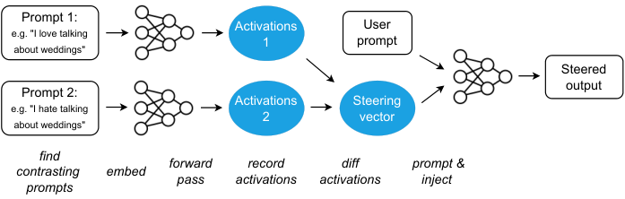
Figure 1: Schematic of the Activation Addition (ActAdd) method. $=$ natural language text; $\bullet$ = vectors of activations just before a specified layer. In this example, the output is heavily biased towards discussing weddings, regardless of the topic of the user prompt. (See Algorithm 1 for the method’s parameters: intervention strength, intervention layer, and sequence alignment.)
图 1：激活加法（ActAdd）方法示意图。$=$ 自然语言文本；$\bullet$ = 指定层之前的激活向量。在此示例中，无论用户提示的主题是什么，输出都强烈倾向于讨论婚礼。（该方法的参数见算法 1：干预强度、干预层和序列对齐。）
3 How Activation Addition works3 激活加法的工作原理
We use decoder-only Transformer neural networks (Vaswani et al. 2017). The LLMs in this work contain a stack of Transformer layers, each consisting of multi-head attention (MHA) and a feedforward network (FFN). We focus on its “residual streams” (Elhage et al. 2021), the sequences $(\mathbf{x}_{0},...,\mathbf{x}_{n})$ of intermediate activation vectors processed by each layer. ActAdd manipulates the residual stream values $\mathbf{h}^{l}$ input to layer $l$. Each layer performs MHA and FFN computations on $\mathbf{x}_{i}$, adding $\mathbf{x}_{i+1}$ to the stream. The final vector $\mathbf{x}_{n}$ in the stream can then be decoded into the next-token prediction. At inference time, the residual stream is initialized $\mathbf{h}^{1}$ with the embedding of the tokenized prompt.
我们使用仅含解码器的 Transformer 神经网络 (Vaswani et al. 2017)。本研究中的 LLM 包含一叠 Transformer 层，每层由多头注意力（MHA）和前馈网络（FFN）组成。我们关注其“残差流”(Elhage et al. 2021)，即由各层处理的中间激活向量序列 $(\mathbf{x}_{0},...,\mathbf{x}_{n})$。ActAdd 操纵输入层 $l$ 的残差流值 $\mathbf{h}^{l}$。每层对 $\mathbf{x}_{i}$ 执行 MHA 和 FFN 计算，并将 $\mathbf{x}_{i+1}$ 加入残差流。随后，残差流中的最终向量 $\mathbf{x}_{n}$ 可被解码为下一个词元的预测。在推理时，使用分词后提示的嵌入初始化残差流 $\mathbf{h}^{1}$。
Activation addition. Our method takes a pair of natural-language prompts $(p_{+},p_{-})$, where $p_{+}$ represents the property we wish output text to emphasise (e.g. love) and $p_{-}$ represents its opposite (e.g. hate or indifference). $\mathbf{h}_{+}^{l}$ is the activation vector for the prompt $p_{+}$ at layer $l$. The difference $\mathbf{h}_{+}^{l}-\mathbf{h}_{-}^{l}$ is a new activation vector which (intuitively) captures the difference between a prompt with the target property, and a prompt without it. The steering vector is computed before inference time.
激活加法。我们的方法接受一对自然语言提示 $(p_{+},p_{-})$，其中 $p_{+}$ 表示我们希望输出文本强调的属性（例如爱），$p_{-}$ 表示其相反属性（例如仇恨或冷漠）。$\mathbf{h}_{+}^{l}$ 是提示 $p_{+}$ 在层 $l$ 处的激活向量。差值 $\mathbf{h}_{+}^{l}-\mathbf{h}_{-}^{l}$ 是一个新的激活向量，直观而言，它捕捉了具有目标属性的提示与不具有该属性的提示之间的差异。转向向量在推理之前计算。
Algorithm 1 ActAdd, optimization-free activation addition
算法 1 ActAdd，无需优化的激活加法
(p+′,p−′)←(p_{+}^{\prime},p_{-}^{\prime})\,\leftarrow\, pad right same token len(p+,p−)(p_{+},p_{-})
𝐡+l←M.\mathbf{h}_{+}^{l}\,\leftarrow\,M\,.\,forward (p+′).(p_{+}^{\prime})\,.\,activations [l][l]
𝐡−l←M.\mathbf{h}_{-}^{l}\,\leftarrow\,M\,.\,forward (p−′).(p_{-}^{\prime})\,.\,activations [l][l]
𝐡Al←𝐡+l−𝐡−l\mathbf{h}_{A}^{l}\,\leftarrow\,\mathbf{h}_{+}^{l}-\mathbf{h}_{-}^{l}
𝐡l←M.\mathbf{h}^{l}\,\leftarrow\,M\,.\,forward (p∗).(p^{*})\,.\,activations [l][l]
S←M.S\,\leftarrow\,M\,.\,continue_forward (c𝐡Al+𝐡l@a)(c\,\mathbf{h}^{l}_{A}+\mathbf{h}^{l}\,\mathrm{@}\,a)To obtain a steering vector, we perform a forward pass on each prompt, record the activations at the given location in each pass, take the difference $\mathbf{h}_{+}^{l}-\mathbf{h}_{-}^{l}$, and then finally rescale this difference in activations by an ‘injection coefficient’ $c$. To steer, we add the resulting activation vector to the input of layer $l$ and allow the forward pass to continue, and so obtain our steered output. $c$ represents the intervention strength, since it multiplies the steering vector’s contribution to the residual stream. We perform hyperparameter tuning to select $c$ and also the injection layer $l$. As expected from past work (Subramani et al. 2022; Mini et al. 2023), intervening at the middle layers is most effective.
为获得转向向量，我们对每个提示执行一次前向传播，记录每次传播中给定位置处的激活，计算差值 $\mathbf{h}_{+}^{l}-\mathbf{h}_{-}^{l}$，最后通过“注入系数” $c$ 对这一激活差值进行缩放。为进行转向，我们将所得激活向量加到层 $l$ 的输入上，并让前向传播继续执行，从而得到转向后的输出。$c$ 表示干预强度，因为它乘以转向向量对残差流的贡献。我们通过超参数调优来选择 $c$ 和注入层 $l$。正如既有研究 (Subramani et al. 2022; Mini et al. 2023) 所预示的，在中间层进行干预最为有效。
Algorithm 1 and Figure 1 depict the resulting ActAdd method. In the appendix, Figure 6 illustrates a figurative example of steering a model with ActAdd if that model had one-dimensional residual streams (rather than e.g. GPT-2-XL’s 1600 dimensions). A runnable notebook can be found at tinyurl.com/actadd.
算法 1 和图 1 展示了由此得到的 ActAdd 方法。附录中的图 6 通过一个形象化示例，说明了当模型具有一维残差流（而非例如 GPT-2-XL 的 1600 维残差流）时，如何使用 ActAdd 对其进行转向。可运行的笔记本见 tinyurl.com/actadd。
We test whether 1) steering vectors are effective at eliciting the desired behavioral shift, and 2) whether they preserve the general capabilities of the model. We run perplexity-based experiments on GPT-2-XL (1.5B parameters, Radford et al. 2019). We then run toxicity and sentiment experiments on OPT (Zhang et al. 2022b) and LLaMA-3 (Meta 2024).
我们检验：1）转向向量能否有效引发所期望的行为变化；2）它们能否保留模型的通用能力。我们在 GPT-2-XL（1.5B 参数，Radford et al. 2019）上开展基于困惑度的实验。随后，我们在 OPT (Zhang et al. 2022b) 和 LLaMA-3 (Meta 2024) 上开展毒性和情感实验。
4 Results: Activation Addition works4 结果：激活加法有效
A summary of all experiments can be found in Table 5.
所有实验的汇总见表 5。
4.1 ActAdd intuitively modifies next-token probabilities4.1 ActAdd 以符合直觉的方式修改下一个词元的概率
We consider the OpenWebText corpus (Peterson et al. 2018). Our running example is the “wedding” topic vector produced by setting $p_{+}=$ weddings, $p_{-}=$ ‘ ’, $l=16$, $c=1$.
我们考察 OpenWebText 语料库 (Peterson et al. 2018)。我们贯穿使用的示例是“婚礼”主题向量，该向量通过设置 $p_{+}=$ 婚礼、$p_{-}=$ ‘ ’、$l=16$、$c=1$ 得到。
4.1.1 ActAdd reduces perplexity on a target topic4.1.1 ActAdd 降低目标主题上的困惑度
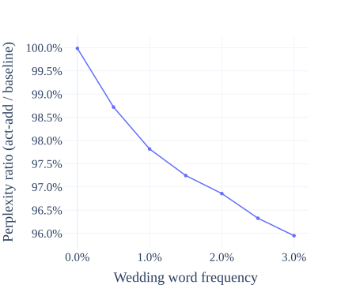
Figure 2: The perplexity ratio compares the relative predictive performance of ActAdd and an unmodified model. Lower is better. Adding the wedding steering vector improves performance on wedding-related text while preserving performance on unrelated text.
图 2：困惑度比值用于比较 ActAdd 与未修改模型的相对预测性能。该值越低越好。添加婚礼转向向量可提升模型在婚礼相关文本上的性能，同时保持其在无关文本上的性能。
For each document $d_{i}\in D$ in OpenWebText (Peterson et al. 2018), we first calculate the frequency of wedding-related words. If a document contains one of these words, the document is considered wedding-related. We randomly sample 300k documents, half of which are wedding-related.
对于 OpenWebText (Peterson et al. 2018) 中的每篇文档 $d_{i}\in D$，我们首先计算婚礼相关词语的出现频率。如果一篇文档包含其中任一词语，则将其视为与婚礼相关的文档。我们随机抽取 300k 篇文档，其中一半与婚礼相关。
We split the documents into sentences and measure GPT-2-XL’s perplexity on both the wedding-related and wedding-unrelated sentences. If the model is effectively steered to generate wedding-related text, it should assign that text higher probability (and thus achieve lower perplexity). For more details, see Section C.1.
我们将文档拆分为句子，并分别测量 GPT-2-XL 在婚礼相关句子和婚礼无关句子上的困惑度。如果模型被有效转向以生成婚礼相关文本，它应当为这类文本赋予更高的概率（从而获得更低的困惑度）。更多细节见第 C.1 节。
Figure 2 shows the ActAdd perplexity relative to the unmodified model. In sentences where the injected topic (weddings) is more relevant, ActAdd’s perplexity is lower and predictive performance increases.
图 2 展示了 ActAdd 相对于未修改模型的困惑度。在与注入主题（婚礼）更相关的句子中，ActAdd 的困惑度更低，预测性能也有所提升。
4.1.2 ActAdd’s impact on token probabilities4.1.2 ActAdd 对词元概率的影响
To test if the intervention is affecting relevant tokens or reducing perplexity in some spurious way, we observe the shift in the distribution of token log probabilities. We do this by randomly sampling 500 documents from the above OpenWebText sample and recording the log-probabilities assigned by the baseline and steered models. This results in a dataset of about 500k tokens, of which 29k are unique. We then group by token, filter for tokens with $>\!\!20$ instances in the dataset, and calculate the mean perplexity difference between the ActAdd and baseline models. By displaying these as a Q-Q plot (Gnanadesikan & Wilk 1968), we can inspect outlier shifts in token probability.
为了检验干预是否影响了相关词元，或者是否以某种非预期方式降低了困惑度，我们观察了词元对数概率分布的变化。具体而言，我们从上述 OpenWebText 样本中随机抽取 500 篇文档，并记录基线模型和转向后的模型赋予的对数概率。由此得到一个包含约 500k 个词元的数据集，其中有 29k 个不同词元。随后，我们按词元分组，筛选出在数据集中出现次数为 $>\!\!20$ 的词元，并计算 ActAdd 与基线模型之间的平均困惑度差异。通过将这些差异绘制为 Q-Q 图 (Gnanadesikan & Wilk 1968)，我们可以检查词元概率变化中的异常值。
Appendix Figure 8 shows the resulting mean log-probability difference distribution. We see that is approximately normal for the bulk of the tokens but with clearly heavy tails. The positive tail is significantly heavier than the negative tail, suggesting that one set of tokens are reliably increased in probability, with a smaller set of tokens reliably decreased to a lesser extent. Outlier tokens can be found in Appendix Table 11. The probabilities most increased on average are primarily wedding-related. The bottom tokens share no obvious theme and show a significantly lower absolute change in probability.
附录图 8 展示了所得的平均对数概率差异分布。我们发现，对于大多数词元，该分布近似为正态分布，但具有明显的重尾。正向尾部明显重于负向尾部，这表明有一组词元的概率稳定上升，而另一组数量较少的词元的概率则稳定下降，且下降幅度较小。异常词元见附录表 11。平均概率增幅最大的词元主要与婚礼相关。概率变化排名最末的词元没有明显的共同主题，其概率变化的绝对幅度也显著更小。
4.1.3 ActAdd steers the model to discuss weddings4.1.3 ActAdd 将模型转向为讨论婚礼
At what layer are steering vectors most effective? Sweeping over GPT-2-XL injection layers for the wedding vector, we measure the average count of wedding-related words given a steering vector injected at each layer.
转向向量在哪一层最有效？我们遍历 GPT-2-XL 中婚礼向量的注入层，测量在各层注入转向向量时婚礼相关词语的平均出现次数。
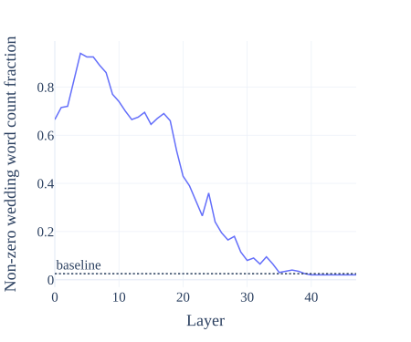
Figure 3: P(steered completion contains wedding-related words) as a function of injection layer.
图 3：P(转向后的续写包含婚礼相关词语) 随注入层的变化。
The intervention is already effective at the very first layer, rises in effectiveness until layer 6, and then declines. For the optimal injection site, we see $>$90% success in topic steering (compared to a $\sim$2% baseline). Figure 3 shows the results of the layer sweep.
干预在第一层就已生效，其效果持续增强至第 6 层，随后下降。在最佳注入位置，主题转向的成功率达到 $>$90%（基线约为 $\sim$2%）。图 3 展示了逐层遍历的结果。
4.2 ActAdd can control what the model talks about4.2 ActAdd 可以控制模型讨论的内容
Method. Steering vectors can elicit generations on a range of topics – not just weddings. Starting from a generic prompt, we use GPT-3.5 to score whether the generations are about a target topic. Specifically, we generate 100 completions for the unmodified model and 100 for each target single-token ActAdd intervention (each token is about a different topic). Compared to the baseline generations, we record how much more frequently the steered model discusses the target topic.
方法。转向向量可以引导模型生成一系列主题的内容，而不仅限于婚礼。我们从一个通用提示开始，使用 GPT-3.5 评分，以判断生成内容是否围绕目标主题。具体而言，我们为未修改模型生成 100 段续写，并为每个目标单词元 ActAdd 干预各生成 100 段续写（每个词元对应一个不同的主题）。与基线生成内容相比，我们记录转向后的模型讨论目标主题的频率提高了多少。
Results. Figure 4 records a large boost in relevance (5-20%) on all topics at injection coefficient $c=2$ (with the exception of “art”).
结果。图 4 显示，在注入系数 $c=2$ 时，所有主题的相关性均大幅提升（5-20%），但“艺术”除外。
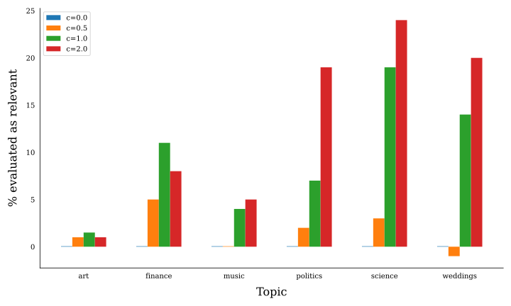
Figure 4: GPT-3.5-scored relevance of ActAdd completions on a range of generic topics.
图 4：由 GPT-3.5 评分的 ActAdd 续写在一系列通用主题上的相关性。
4.3 ActAdd can reduce toxicity4.3 ActAdd 可以降低毒性
Method. We benchmark toxicity reduction by generating steered continuations from RealToxicityPrompts (Gehman et al., 2020). Following Pei et al. 2023 we use a random subset $n=1,000$. We repeat this sampling 5 times to obtain $p$-values ($t$-test against SOTA), bolding rows which are better with $p<0.05$. For each continuation, we use the Perspective API to score toxicity.
方法。我们基于 RealToxicityPrompts (Gehman et al., 2020) 生成转向后的续写，以对毒性降低效果进行基准评测。遵循 Pei et al. 2023，我们使用大小为 $n=1,000$ 的随机子集。我们将这一抽样过程重复 5 次，以获得 $p$ 值（针对 SOTA 进行 $t$ 检验），并将以 $p<0.05$ 显著优于 SOTA 的行加粗。对于每段续写，我们使用 Perspective API 对其毒性进行评分。
Results. To establish a common scale, we reused the baselines and PREADD results from Pei et al. 2023, adding Air-Decoding Zhong et al. 2023 and FUDGE Yang & Klein 2021. This yields 6 baselines to compare ActAdd against. (We also considered Gu et al. 2022 (which reported 0.043 toxicity), but we could not reproduce the results; also, their disfluency (54.6) is too high for practical use.) We compare to ActAdd using OPT (Zhang et al. 2022b) and LLaMA-3 (Meta 2024).
结果。为建立统一的比较尺度，我们复用了 Pei et al. 2023 中的基线和 PREADD 结果，并加入了 Air-Decoding Zhong et al. 2023 和 FUDGE Yang & Klein 2021。由此得到 6 个用于与 ActAdd 比较的基线。（我们也考虑了 Gu et al. 2022（其报告的毒性为 0.043），但未能复现其结果；此外，其不流畅度（54.6）过高，无法用于实际应用。）我们将这些方法与使用 OPT (Zhang et al. 2022b) 和 LLaMA-3 (Meta 2024) 的 ActAdd 进行比较。
As shown in Table 3, ActAdd-OPT has 8% lower toxicity than the second-best, PREADD-D-OPT, and ActAdd-LLaMA-3 gives a 5% drop over LLaMA-3 with a very small fluency penalty.
如表 3 所示，ActAdd-OPT 的毒性比次优方法 PREADD-D-OPT 低 8%，而 ActAdd-LLaMA-3 相较于 LLaMA-3 将毒性降低了 5%，且流畅性损失很小。
Table 3: Results on RealToxicityPrompts (random n=1000). The OPT used is 6.7B parameters, LLaMA-3-8B. Bold is $p<0.05$ against second-best. Gray text denotes numbers reported by Pei et al. 2023 (PREADD), Yang & Klein 2021 (FUDGE), or Zhong et al. 2023 (Air-Decoding). More recent models are less toxic by default. However, ActAdd-OPT is the least toxic of the OPT interventions and even outperforms an unsteered LLaMA-3.
表 3：在 RealToxicityPrompts 上的结果（随机抽样 n=1000）。所用 OPT 的参数量为 6.7B，LLaMA-3 为 LLaMA-3-8B。加粗表示与次优方法相比 $p<0.05$。灰色文字表示由 Pei et al. 2023 (PREADD)、Yang & Klein 2021 (FUDGE) 或 Zhong et al. 2023 (Air-Decoding) 报告的数值。较新的模型在默认情况下毒性较低。不过，ActAdd-OPT 是各项 OPT 干预中毒性最低的方法，甚至优于未经转向的 LLaMA-3。
| Control Type 控制类型 | Method 方法 | Model 模型 | Toxicity $\downarrow$ 毒性 $\downarrow$ | (Dis)Fluency $\downarrow$ （不）流畅度 $\downarrow$ | Relevance $\uparrow$ 相关性 $\uparrow$ |
| Unsteered 未转向 | baseline 基线 | OPT | .134 | 8.9 | .369 |
| Prompting 提示 | baseline 基线 | OPT | .200 | 54.3 | .294 |
| Steering vector 转向向量 | ActAdd | OPT | .112 | 13.8 | .329 |
| Controlled gen. 受控生成 | FUDGE | GPT-2-M | .128 | 22.1 | .329 |
| Contrast. decoding 对比解码 | PREADD-S | OPT | .134 | 51.7 | .290 |
| Contrast. decoding 对比解码 | PREADD-D | OPT | .122 | 56.6 | .326 |
| Gradient-guided gen. 梯度引导生成 | Air-Decoding | GPT-2-L | .185 | 48.3 | - |
| Unsteered 未转向 | baseline 基线 | LLaMA3 | .114 | 6.3 | .391 |
| Steering vector 转向向量 | ActAdd | LLaMA3 | .108 | 6.7 | .365 |
4.4 ActAdd can control sentiment4.4 ActAdd 可以控制情感
Method. To evaluate sentiment, we use the Stanford IMDb dataset (Maas et al., 2011). Our goal is for the model to continue each review but with the opposite sentiment. We compute the proportion of generated outputs with the desired sentiment, as classified by a model finetuned on sentiment data, SiEBERT (Hartmann et al. 2023). For quality controls, we follow the conventional use of conditional perplexity to mark (dis)fluency, obtained using GPT-3 davinci-002 logprobs. We use cosine similarity between the prompt and continuation sentence embeddings to gauge the relevance of text in $[0,1]$. We evaluate sentiment changes from positive to negative and vice versa on a random subset of $n=1,000$ and repeat to obtain $p$-values.
方法。为评估情感，我们使用 Stanford IMDb 数据集 (Maas et al., 2011)。我们的目标是让模型续写每条评论，但使续写内容具有相反的情感。我们使用在情感数据上微调的模型 SiEBERT (Hartmann et al. 2023) 进行分类，计算具有目标情感的生成输出所占的比例。在质量控制方面，我们遵循惯例，使用条件困惑度衡量（不）流畅度，该指标通过 GPT-3 davinci-002 的对数概率获得。我们使用提示与续写内容的句子嵌入之间的余弦相似度，衡量文本的相关性，其取值范围为 $[0,1]$。我们在一个大小为 $n=1,000$ 的随机子集上评估从正面到负面以及从负面到正面的情感变化，并重复评估以获得 $p$ 值。
Table 4: Results on IMDb sentiment. “Steering” denotes the probability of changing sentiment classification (called “success” in the baselines’ papers). Bold results represent $p<0.05$ compared to the second-best. Gray text denotes numbers reported by Pei et al. 2023. Underline denotes best steered result. Fluency is worse under all steering methods; 1.5x to 3x worse for ActAdd, 7x worse for PREADD.
表 4：IMDb 情感实验结果。“转向”表示改变情感分类的概率（在基线方法的论文中称为“成功”）。粗体结果表示与次优结果相比，$p<0.05$。灰色文字表示 Pei et al. 2023 报告的数值。下划线表示最佳转向结果。所有转向方法都会使流畅度变差；ActAdd 的不流畅度增至原来的 1.5x 至 3x，PREADD 则增至原来的 7x。
| positive to negative 正面转负面 | negative to positive 负面转正面 | |||||
| Method 方法 | Steering $\uparrow$ 转向 $\uparrow$ | Disfluency $\downarrow$ 不流畅度 $\downarrow$ | Relevance $\uparrow$ 相关性 $\uparrow$ | Steer. $\uparrow$ 转向 $\uparrow$ | Disflu. $\downarrow$ 不流畅度 $\downarrow$ | Rel. $\uparrow$ 相关性 $\uparrow$ |
| ActAdd-OPT | 0.432 | 24.2 | 0.387 | 0.564 | 20.95 | 0.363 |
| ActAdd-LLaMA3 | 0.268 | 8.6 | 0.354 | 0.669 | 15.2 | 0.275 |
| OPT-Baseline | 0.175 | 8.95 | 0.430 | 0.445 | 9.38 | 0.423 |
| LLaMA3-Baseline | 0.138 | 5.8 | 0.437 | 0.417 | 6.09 | 0.426 |
| OPT-Prompt | 0.307 | 53.5 | 0.298 | 0.365 | 50.9 | 0.287 |
| FUDGE | 0.532 | 25.1 | 0.311 | 0.551 | 22.7 | 0.320 |
| PREADD-S-OPT | 0.631 | 68.4 | 0.253 | 0.624 | 67.1 | 0.258 |
Results. Table 4 shows that our method is competitive on a conventional measure of sentiment control (Maas et al. 2011). We obtain state of the art success at steering from negative to positive sentiment. While. The only method which outperforms ActAdd in the positive to negative direction incurs a large penalty to fluency (68.4 vs 24.2, when matching methods on the same pretrained model) and relevance.
结果。表 4 表明，在常用的情感控制指标上，我们的方法具有竞争力 (Maas et al. 2011)。在将情感从负面转向正面时，我们取得了当前最先进的成功率。然而。在从正面转向负面的方向上，唯一优于 ActAdd 的方法在流畅度（在同一预训练模型上比较方法时为 68.4 对 24.2）和相关性方面均付出了较大代价。
4.5 ActAdd preserves the model’s general knowledge4.5 ActAdd 保留了模型的通用知识
Method. We use ConceptNet from the LAMA benchmark, a general knowledge dataset (Petroni et al. 2019, $n=29,774$ sentences, see Appendix Table 10). The model is given a prompt and then has to predict a factual completion. The task is intended for both causal and masked models, so some examples are difficult for causal-attention models (like GPT-2) due to the extremely limited context.
方法。我们使用通用知识数据集 LAMA 基准中的 ConceptNet (Petroni et al. 2019, $n=29,774$ 个句子，见附录表 10)。模型接收一个提示，然后必须预测符合事实的补全内容。该任务同时面向因果模型和掩码模型，因此，由于上下文极其有限，一些样例对于因果注意力模型（如 GPT-2）而言较为困难。
For each sentence, we run the model on its prompt with and without the wedding activation addition. $P@K$ is the probability that the expected label is among the model’s top-$K$ predicted tokens, conditioned on the prompt. We score the baseline and modified models by calculating mean $P@K$ values for a range of $K$. Finally we plot these for both modified and unmodified models over a range of $K$ values.
对于每个句子，我们分别在加入和不加入婚礼激活的情况下，使用其提示运行模型。$P@K$ 表示在给定提示的条件下，预期标签位于模型预测概率最高的 $K$ 个词元之中的概率。我们针对一系列 $K$ 值计算平均 $P@K$，以此对基线模型和修改后的模型进行评分。最后，我们在一系列 $K$ 值上绘制修改后和未修改模型的这些指标。
Results. Figure 5 shows that on the ConceptNet benchmark of factual questions, our method has a negligible impact on off-target answer probabilities.
结果。图 5 表明，在事实性问题的 ConceptNet 基准上，我们的方法对非目标答案概率的影响可以忽略不计。
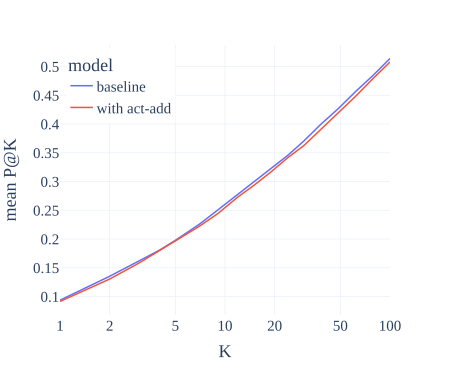
Figure 5: Testing side effects ofActAdd with the ConceptNet benchmark (Petroni et al. 2019). ‘$P@K$’ is the probability of the correct answer being in the model’s top $K$ answers. Our method has a negligible impact on off-target probabilities across a range of top-$K$ values.
图 5：使用 ConceptNet 基准 (Petroni et al. 2019) 测试 ActAdd 的副作用。“$P@K$”表示正确答案位于模型排名前 $K$ 的答案之中的概率。在一系列前 $K$ 项取值下，我们的方法对非目标概率的影响均可忽略不计。
5 Discussion5 讨论
Algebraic combination of forward passes前向传播的代数组合
ActAdd can be viewed as composition of separate forward passes. For example, we compose $\mathbf{h}_{+}$, $\mathbf{h}_{-}$ and $\mathbf{h}^{*}$ to produce steered output. We were surprised that forward passes can “compose” in this way, despite the model not being trained to allow this operation. The composability of forward passes is itself evidence for compositional representations (Olah 2023), independent of the evidence from task-composition arithmetic on weights (Ilharco et al. 2023).
ActAdd 可以视为多个独立前向传播的组合。例如，我们将 $\mathbf{h}_{+}$、$\mathbf{h}_{-}$ 和 $\mathbf{h}^{*}$ 组合起来，以生成转向后的输出。尽管模型并未经过允许此类操作的训练，前向传播仍能以这种方式“组合”，这令我们感到意外。前向传播的可组合性本身就是组合式表征的证据 (Olah 2023)，独立于通过权重上的任务组合算术运算得到的证据 (Ilharco et al. 2023)。
Limitations局限性
To steer the model using an ActAdd vector, the user supplies the injection coefficient $c$ and the intervention layer $l$. So far we have had success with fixing the sequence alignment $a=1$. Overall, these free hyperparameters make ActAdd less user-friendly than simple prompt engineering. Thankfully, the user does not have to perform a fresh hyperparameter sweep for each use case; in practice, intervention hyperparameters are stable. We include examples of failed steering vectors in Appendix Table 7. We also have not examined ActAdd’s potential impact on reasoning. ActAdd is not immediately applicable given only API access to a model. The model must both cache and expose intermediate activations at the given layer (Bloom & Nanda 2022). Currently, APIs generally do not allow for this.
使用 ActAdd 向量对模型进行转向时，用户需要提供注入系数 $c$ 和干预层 $l$。迄今为止，我们通过将序列对齐参数固定为 $a=1$ 取得了成功。总体而言，这些自由超参数使 ActAdd 不如简单的提示工程易用。所幸，用户无需针对每个用例重新进行超参数扫描；在实践中，干预超参数是稳定的。我们在附录表 7 中给出了转向失败的向量示例。我们也尚未考察 ActAdd 对推理的潜在影响。在仅能通过 API 访问模型的情况下，ActAdd 无法直接应用。模型必须既能缓存又能暴露给定层的中间激活 (Bloom & Nanda 2022)。目前，API 通常不支持此类操作。
Activation engineering vs finetuning激活工程与微调
Finetuning is better understood and more flexible – we doubt that activation engineering can e.g. teach a model a new skill. However, finetuning is significantly more costly and may not be able to elicit the same kinds of capabilities which activation engineering can elicit.
人们对微调的理解更为充分，且微调更为灵活——例如，我们怀疑激活工程能否教会模型一项新技能。然而，微调的成本显著更高，而且可能无法激发激活工程所能激发的同类能力。
The first advantage of ActAdd is efficiency: the method requires no backward passes and can thus run on any machine that can perform inference rather than training. Implementation effort is also greatly reduced; only forward passes are required to find a suitable ($p_{+},p_{-})$ and minimal labelled data is required - just the steering prompt pair. We discovered most of the example contrast pairs in Appendix Table 6 in minutes. All things considered, even nontechnical users can benefit from rapid feedback and relatively easy iteration
ActAdd 的第一个优势是效率：该方法无需反向传播，因此可在任何能够执行推理而无需具备训练能力的机器上运行。实现所需的工作量也大幅减少；寻找合适的 ($p_{+},p_{-})$ 只需前向传播，所需的标注数据也极少——仅需一对转向提示。我们仅用几分钟就找到了附录表 6 中的大多数示例对比提示对。综合来看，即使是不具备技术背景的用户，也能受益于快速反馈和相对容易的迭代。
Activation engineering vs prompt engineering激活工程与提示工程
Activation additions can be continuously weighted, while prompts are discrete – a token is either present, or not. To more intensely steer the model to generate wedding-related text, our method does not require any edit to the prompt, but instead just increasing the injection coefficient. See Appendix B for suggestive experiments on ActAdd vs prompting. Unlike system prompts, activation additions do not take up token space in the model’s context window, although this is a small benefit in the era of multi-million token context windows.
激活加法可以进行连续加权，而提示是离散的——一个词元要么存在，要么不存在。为了更强地引导模型生成与婚礼相关的文本，我们的方法无需对提示进行任何修改，只需增大注入系数即可。有关 ActAdd 与提示方法的启发性实验，见附录 B。与系统提示不同，激活加法不占用模型上下文窗口中的词元空间，不过，在上下文窗口达到数百万词元的时代，这一优势较小。
While prompting is more flexible and even cheaper than ActAdd, activation additions may elicit capabilities which prompting cannot (as evidenced by our superior results over prompting; see also the speculation in Section 1).
尽管提示方法更灵活，成本甚至比 ActAdd 更低，但激活加法可能激发提示方法无法激发的能力（我们优于提示方法的结果为此提供了证据；另见第 1 节中的推测）。
Interpretability of LLMsLLM 的可解释性
In most programs, adding values to imprecisely targeted intermediate memory locations would not yield sensible results. Why expect this from Transformers?
在大多数程序中，向未精确定位的中间内存位置添加数值不会产生合理的结果。为什么会期望 Transformer 能够做到这一点？
A growing consensus is that the activation space of an LLM contains directions which represent high-level latents causally involved in what is generated (Burns et al. 2022; Moschella et al. 2023; Li et al. 2023a; Nanda 2023; Li et al. 2023b).
一种日益形成的共识是，LLM 的激活空间中包含一些方向，这些方向表示对生成内容具有因果作用的高层潜在因素 (Burns et al. 2022; Moschella et al. 2023; Li et al. 2023a; Nanda 2023; Li et al. 2023b)。
Our hypothesis, following Elhage et al. 2022, is more specific: that neural networks represent features of the input as directions in activation space, that is, with a linear representation (Park et al. 2023). Moreover, the direction in activation space that corresponds to (say) a love-hate latent variable stays approximately the same across a broad class of inputs.
我们沿用 Elhage et al. 2022 提出了一项更具体的假设：神经网络将输入的特征表示为激活空间中的方向，即采用线性表示 (Park et al. 2023)。此外，在广泛的一类输入中，激活空间内对应于某个潜变量（例如爱恨潜变量）的方向大致保持不变。
Alain & Bengio 2018 use linear probes on residual streams to infer that LLM representations are at least partially linear; if a linear probe can predict some feature of text output from the residuals with high accuracy, this forms evidence that the feature is represented linearly (i.e. as a simple direction) (Nanda 2023).
Alain & Bengio 2018 在残差流上使用线性探针，推断出 LLM 的表示至少部分是线性的；如果线性探针能够根据残差以较高准确率预测输出文本的某个特征，这就构成了该特征以线性方式（即以一个简单方向）表示的证据 (Nanda 2023)。
The success of activation addition gives stronger, experimental evidence of feature linearity, demonstrating that models use feature-related information. Consider the central Love - Hate vector example: we add it to the forward pass and so increase love-related completions. On the examined prompts, this direction is responsible for steering the rest of the model towards love-related completions. In general, steering vectors establish causality, at least in the limited set of contexts examined.
激活加法的成功为特征的线性性提供了更有力的实验证据，表明模型确实使用了与特征相关的信息。以核心的 Love - Hate 向量示例为例：我们在前向传播中加入该向量，从而增加与爱相关的续写。在所考察的提示上，这一方向将模型的其余部分引导至与爱相关的续写。一般而言，转向向量确立了因果关系，至少在所考察的有限情境集合中如此。
Value alignment of LLMsLLM 的价值对齐
Activation engineering is a promising way to control LLMs. Successor methods may be able to provide general steering methods (e.g. through some analogue of a Be helpful vector). Alongside contemporaneous work (Li et al. 2023b; Liu et al. 2023), our experiments suggest that activation engineering can flexibly retarget LLM behavior without damaging general performance. We speculate that ActAdd changes the model’s currently active mixture of goals and priorities. Suitably developed, the activation engineering approach could enable safety progress while preserving overall capabilities
激活工程是一种有前景的 LLM 控制方式。后续方法或许能够提供通用的转向方法（例如通过某种类似于 Be helpful 向量的方式）。结合同期工作 (Li et al. 2023b; Liu et al. 2023)，我们的实验表明，激活工程能够灵活地调整 LLM 行为的目标，同时不损害整体性能。我们推测，ActAdd 改变了模型当前处于激活状态的目标与优先事项的组合。经过适当发展，激活工程方法有望在保留整体能力的同时推动安全性进展。
6 Conclusion6 结论
While methods like prompt engineering, controlled decoding, and finetuning have benefits, they fail to elicit full capabilities from language models. To more reliably elicit these abilities, activation engineering strategically perturbs activations at inference time. In particular, we introduced Activation Addition to steer models by shifting their inference-time activations along a certain direction (like the “Love”-“Hate” vector). ActAdd is lightweight and effective, achieving SOTA on toxicity reduction and sentiment shift while retaining overall model capabilities. ActAdd demonstrates the promise of activation engineering. We look forward to future work realizing this promise.
尽管提示工程、受控解码和微调等方法各有优势，但它们未能充分激发语言模型的能力。为更可靠地激发这些能力，激活工程在推理时有策略地扰动激活。具体而言，我们引入了 Activation Addition，通过沿特定方向（例如“Love”-“Hate”向量）移动模型在推理时的激活来对模型进行转向。ActAdd 轻量且有效，在降低毒性和情感偏移方面达到了 SOTA，同时保留了模型的整体能力。ActAdd 展示了激活工程的潜力。我们期待未来的工作实现这一潜力。
Reproducibility Statement可复现性声明
Our code is available here: https://zenodo.org/records/13879423. The following is an exhaustive list of models used, sampling strategies used, and searches run:
我们的代码可在此处获取：https://zenodo.org/records/13879423。以下完整列出了所使用的模型、采样策略以及执行的搜索：
Data processing数据处理
To curate a wedding-related subset of OpenWebText, we retained documents with wedding-related words (see Section 4.1.1). The only pre-processing performed is to remove sequences of null characters. Each document is split into sentences $s_{j}\in d_{i}$ using the Punkt tokenizer (Strunk 2013).
为从 OpenWebText 中筛选出一个与婚礼相关的子集，我们保留了包含婚礼相关词语的文档（见第 4.1.1 节）。唯一进行的预处理是移除空字符序列。使用 Punkt 分词器 (Strunk 2013) 将每篇文档划分为句子 $s_{j}\in d_{i}$。
Models模型
After observing success with GPT-2-XL, to replicate our results, we subsequently repeated the same experiments with Llama-1-13B (Touvron et al. 2023) and GPT-J-6B (Wang & Komatsuzaki 2021). Our toxicity and sentiment experiments use OPT (Zhang et al. 2022b) and LLaMA-3-8B Meta 2024. See Appendix E for details. We use all-MiniLM-L6-v2 (Reimers & Gurevych 2019) to compute sentence embeddings to calculate relevance using cosine similarity. For the success score, we use the SiEBERT (Hartmann et al. 2023) sentiment classifier. We perform sentiment classificaton with the SiEBERT classifier (Hartmann et al., 2023).
在观察到 GPT-2-XL 上的成功结果后，为复现我们的结果，我们随后使用 Llama-1-13B (Touvron et al. 2023) 和 GPT-J-6B (Wang & Komatsuzaki 2021) 重复了相同的实验。我们的毒性和情感实验使用 OPT (Zhang et al. 2022b) 和 LLaMA-3-8B Meta 2024。详情见附录 E。我们使用 all-MiniLM-L6-v2 (Reimers & Gurevych 2019) 计算句子嵌入，并通过余弦相似度计算相关性。对于成功得分，我们使用 SiEBERT (Hartmann et al. 2023) 情感分类器。我们使用 SiEBERT 分类器 (Hartmann et al., 2023) 进行情感分类。
APIsAPI
For scoring toxicity, we use https://www.perspectiveapi.com/. For scoring fluency, we use OpenAI davinci-002. The PREADD baseline instead used the discontinued davinci-001 model.
我们使用 https://www.perspectiveapi.com/ 对毒性进行评分。我们使用 OpenAI davinci-002 对流畅性进行评分。PREADD 基线则使用了已停用的 davinci-001 模型。
Seed随机种子
We ran all generations on seed $0$. After collecting all other data, we validated that our qualitative results transfer to seeds $1$ and $2$.
我们使用随机种子 $0$ 运行了所有生成过程。在收集完所有其他数据后，我们验证了我们的定性结果同样适用于随机种子 $1$ 和 $2$。
Sampling hyperparameters采样超参数
We precommitted to fixed sampling hyperparameters, selected before experiments began. We held them fixed throughout our data collection. Those sampling hyperparameters were temperature$=1.0$, freq_penalty$=1.0$, and top_p=$0.3$. Since this top_p value seemed a bit unusual to us in retrospect, we invited an external researcher to reproduce this process with an unmodified GPT-2-XL and report the best sampling hyperparameters they found. This second experiment was blinded, as they did not know the values we used. They found that temperature$=0.6$ and top_p$=0.5$ produced better GPT-2-XL capabilities. We reran all our qualitative results at this setting, and they all reproduced (subjectively, more impressively).
我们事先承诺使用固定的采样超参数，并在实验开始前选定了这些参数。在整个数据收集过程中，我们始终保持这些参数不变。这些采样超参数为 temperature$=1.0$、freq_penalty$=1.0$ 和 top_p=$0.3$。由于回顾时我们觉得这个 top_p 值有些不寻常，我们邀请了一位外部研究人员使用未经修改的 GPT-2-XL 复现这一过程，并报告其找到的最佳采样超参数。第二次实验采用盲法，因为该研究人员并不知道我们使用的参数值。该研究人员发现，temperature$=0.6$ 和 top_p$=0.5$ 能使 GPT-2-XL 表现出更好的能力。我们在此设置下重新运行了所有定性实验，所有结果均得以复现（从主观上看，效果更为出色）。
We use the same sampling hyperparameters for the toxicity and sentiment experiments. Numbers reported by the other authors were obtained with freq_penalty$=0.0$, and top_p=$1.0$.
我们在毒性和情感实验中使用相同的采样超参数。其他作者报告的数值是在 freq_penalty$=0.0$ 和 top_p=$1.0$ 的设置下获得的。
In replicating the unsteered OPT sentiment baseline, we find that the NegToPos direction is consistently higher success than PosToNeg. This holds across different combinations of model hyperparameters, including those in Pei et al. 2023. However, PREADD Pei et al., 2023 reports similar success results for both (i.e. a much lower NegToPos success). The OPT results use our calculated values.
在复现未经转向的 OPT 情感基线时，我们发现 NegToPos 方向的成功率始终高于 PosToNeg。在不同的模型超参数组合下，这一结论均成立，包括 Pei et al. 2023 中使用的组合。然而，PREADD Pei et al., 2023 报告的两个方向的成功率相近（即 NegToPos 的成功率低得多）。OPT 的结果采用我们计算的数值。
Reporting the best of $K$ completions报告 $K$ 个补全文本中的最佳结果
We generated $K=3$ completions for each qualitative demonstration, for both normal and steered forward-passes. Appendix Table 6, shows the subjectively most compelling completion pair out of the first three seed-$0$ completion-pairs. You can see all top-3 completions for the entries in this notebook: tinyurl.com/actadd3. We share activation additions which work well. We iterated over contrast pairs to get these to work, although several striking results were generated within [first author’s] first hour of using the technique. Out of the 12 activation additions we thought demonstrated a distinct ability of the method, we decided not to include 1 because its first three seed-$0$ completions were unusually unimpressive. We include the remaining 11 in Table 6.
对于每个定性演示，我们分别通过常规前向传播和经转向的前向传播生成了 $K=3$ 个补全文本。附录表 6 展示了随机种子为 $0$ 时前三对补全文本中主观上最有说服力的一对。您可以在此笔记本中查看各条目的全部前 3 个补全文本：tinyurl.com/actadd3。我们分享了效果良好的激活加法操作。我们通过反复调整对比对使这些操作奏效，不过，其中几个引人注目的结果是在[第一作者]使用该技术的第一个小时内生成的。在我们认为展示了该方法某种独特能力的 12 个激活加法操作中，我们决定不纳入其中 1 个，因为它在随机种子为 $0$ 时生成的前 3 个补全文本的效果异常平庸。我们将其余 11 个纳入表 6。
ActAdd hyperparameters ($l,c$)ActAdd 超参数 ($l,c$)
This section does not have complete statistics. We perform simple grid search, usually between $c\in[3,20]$ and $l\in[6,24]$.
本节未提供完整的统计数据。我们进行简单的网格搜索，搜索范围通常为 $c\in[3,20]$ 和 $l\in[6,24]$。
Hardware:硬件：
GPU: Nvidia RTX A5000, CPU: Intel Core i9-10900X CPU @ 3.70GHz. 24GB GPU RAM, 32GB system RAM
GPU：Nvidia RTX A5000，CPU：Intel Core i9-10900X CPU @ 3.70GHz。GPU 显存为 24GB，系统内存为 32GB
Relevant libraries and frameworks:相关库和框架：
Operating system: Ubuntu 22.04.1 LTS, numpy: 1.24.3, pandas: 2.0.1, torch: 1.13.1, transformer-lens: 1.4.0.
操作系统：Ubuntu 22.04.1 LTS，numpy：1.24.3，pandas：2.0.1，torch：1.13.1，transformer-lens：1.4.0。
Author Contributions作者贡献
Turner: conceptualization, team management, implementation of core features, design of many experiments, discovery of many individual steering vectors, and wrote much of the original post.
Turner：概念构思、团队管理、核心功能实现、多项实验的设计、多个具体转向向量的发现，以及原始博文大部分内容的撰写。
Thiergart: had idea for variations on positions of addition, implemented the positional experiment, worked on theory.
Thiergart：提出改变加法位置的想法，实现位置实验，开展理论研究。
Leech: designed new experiments, designed figures, formalized the algorithm and evaluations, wrote the main text based on the earlier post, literature review.
Leech：设计新实验、设计图、形式化算法与评估方法、基于早期博文撰写正文，以及开展文献综述。
MacDiarmid: most of the main library code.
MacDiarmid：编写主要程序库的大部分代码。
Udell: wrote and edited the original post, generated qualitative results.
Udell：撰写和编辑原始博文，生成定性结果。
Mini: infrastructure support, OpenAI wrappers, experiments on LLaMA, Vicuna and GPT-J.
Mini：提供基础设施支持、编写 OpenAI 封装程序，以及开展 LLaMA、Vicuna 和 GPT-J 实验。
Vazquez: wrote part of text, conducted toxicity, sentiment control, and other experiments on LLaMA-3, OPT, GPT-2.
Vazquez：撰写部分文本，在 LLaMA-3、OPT、GPT-2 上开展毒性、情感控制及其他实验。
Acknowledgments致谢
We thank Peli Grietzer for providing an independent hyperparameter tuning run. We thank Alex Cloud, Jan Brauner, Andis Draguns, Sören Mindermann and Raymond Douglas for helpful comments on the draft, as well as Andrew Critch, Aryan Bhatt, Chris Olah, Ian McKenzie, janus, Julian Schulz, Justis Mills, Lawrence Chan, Leo Gao, Neel Nanda, Oliver Habryka, Olivia Jimenez, Paul Christiano, Peter Barnett, Quintin Pope, Tamera Lanham, Thomas Kwa, and Tristan Hume for comments on an earlier draft. We thank Rusheb Shah for engineering assistance. We thank Garrett Baker for running tests on GPT-J (6B) We thank an anonymous ICML reviewer for their extremely thoughtful comments.
我们感谢 Peli Grietzer 独立开展了一次超参数调优。我们感谢 Alex Cloud、Jan Brauner、Andis Draguns、Sören Mindermann 和 Raymond Douglas 对草稿提出的宝贵意见，也感谢 Andrew Critch、Aryan Bhatt、Chris Olah、Ian McKenzie、janus、Julian Schulz、Justis Mills、Lawrence Chan、Leo Gao、Neel Nanda、Oliver Habryka、Olivia Jimenez、Paul Christiano、Peter Barnett、Quintin Pope、Tamera Lanham、Thomas Kwa 和 Tristan Hume 对早期草稿提出的意见。我们感谢 Rusheb Shah 提供的工程协助。我们感谢 Garrett Baker 在 GPT-J (6B) 上运行测试。我们感谢一位匿名 ICML 审稿人提出的极为深思熟虑的意见。
Appendix
附录
(Note: some completions contain unpleasant content, including slurs.)
（注：部分补全文本含有令人不适的内容，包括侮辱性用语。）
Appendix A Broader Impacts附录 A 更广泛的影响
As the examples of anger- and conspiracy-steering show (Appendix Table 6), ActAdd can easily be misused. Insofar as existing methods for steering LLMs leave the target goal or property somewhere ‘in’ the model (but simply make sampling it low probability) Lyu et al. 2024, activation engineering may circumvent superficial alignment methods.
如愤怒转向和阴谋论转向的示例所示（附录表 6），ActAdd 很容易被滥用。如果现有的 LLM 转向方法仍将目标或属性保留在模型“内部”的某处（只是使采样得到它的概率较低）Lyu et al. 2024，那么激活工程就可能绕过表层的对齐方法。
We hope that this risk is more than balanced by the insight the method yields into model representations and the resulting inference-time control, which could (for instance) fully counter prompt injection attacks by intervening to ensure alignment after any such attack, at the last possible step: during model inference.
我们希望，该方法对模型表征带来的洞见以及由此实现的推理时控制，其益处能够充分抵消这一风险；例如，这种控制可以在任何提示注入攻击发生后，于最后一个可行环节——模型推理期间——通过干预来确保对齐，从而完全抵御此类攻击。
Appendix B Is ActAdd just a subtle kind of prompt engineering?附录 B ActAdd 是否只是一种隐蔽的提示工程？
One hypothesis is that ActAdd steering vectors are in some way equivalent to token injection – e.g. adding a virtual ‘ weddings’ token at the given stream position. This is plausible for simpler interventions. Given the prompt ‘I love you because’, if we inject a ‘ wedding’ token into the first residual stream with a large coefficient, perhaps the model indeed just processes the prompt as ‘ wedding love you because’ instead.
一种假设认为，ActAdd 转向向量在某种意义上等价于词元注入，例如在给定的流位置添加一个虚拟的“ 婚礼”词元。对于较简单的干预，这一假设具有合理性。给定提示“我爱你，因为”，如果我们以较大的系数将一个“ 婚礼”词元注入第一个残差流，模型或许确实只是将该提示当作“ 婚礼爱你，因为”来处理。
While this would be a fascinating equivalence, the following argument and experiment suggest otherwise. Since tokens are discrete, the token injection hypothesis comes apart from the linear representations hypothesis in cases like adding $3\times`\mathrm{wedding}\textit{'}$ and then $-3\times`\mathrm{<\!whitespace\!>}\textit{'}$, on top of the token ‘I’. Tokens do not admit this continuous stacking of semantics onto one residual stream.
尽管这种等价关系会很有趣，但以下论证和实验表明，事实并非如此。由于词元是离散的，在诸如将 $3\times`\mathrm{wedding}\textit{'}$ 再将 $-3\times`\mathrm{<\!whitespace\!>}\textit{'}$ 叠加到词元“我”之上的情形中，词元注入假设与线性表征假设会产生分歧。词元不支持以这种连续方式将语义叠加到同一个残差流上。
However, consider the steering vector for Anger$-$ Calm with $l=20,c=+10$. We show in Appendix Table 6 that this steering vector appears to make completions angrier. Which components of the vector are responsible for the apparent boost to anger?
然而，考虑 $l=20,c=+10$ 时的愤怒$-$平静转向向量。我们在附录表 6 中展示，该转向向量似乎会使补全文本更加愤怒。向量中的哪些分量导致了这种表面上的愤怒增强？
Skeptical hypothesis: perhaps the anger steering effect is driven less by the computational work done by Transformer blocks 0 through 19, but instead simply the embedding vector component of the steering vector: $10\times(\mathrm{embed}(\mathrm{Anger})-\mathrm{embed}(\mathrm{Calm}))$.
一种质疑性假设是：愤怒转向效应或许较少由 Transformer 的第 0 至第 19 个块所完成的计算驱动，而只是由转向向量中的嵌入向量分量驱动：$10\times(\mathrm{embed}(\mathrm{Anger})-\mathrm{embed}(\mathrm{Calm}))$。
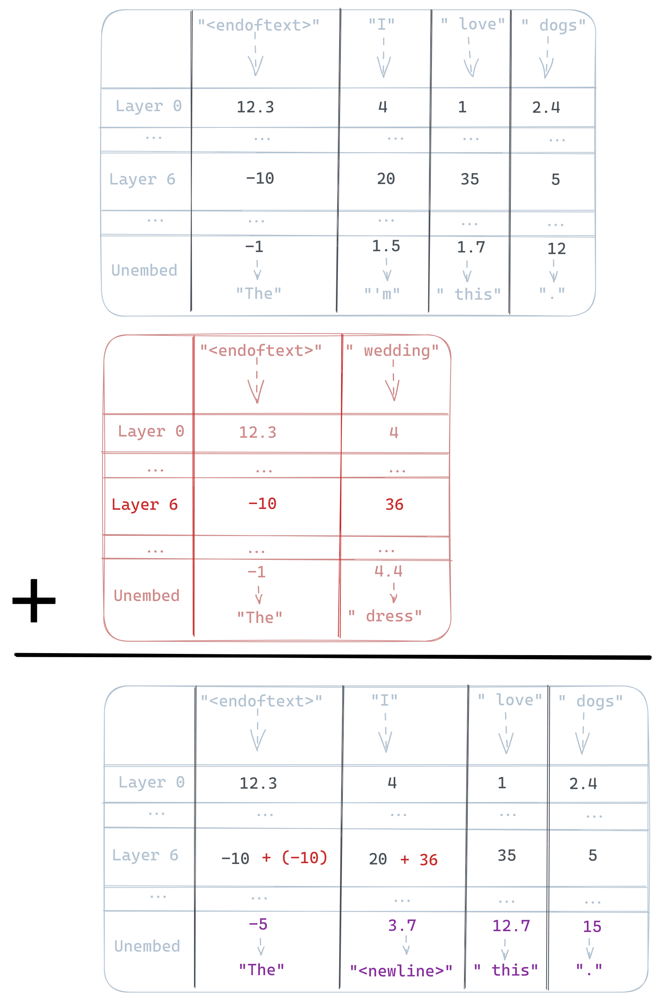
Figure 6: Pedagogical example: A wedding vector steering a model with $1$-dimensional residuals, a fiction which lets us fill each cell below with a scalar instead of the actual vector. Let the user prompt $p^{*}=$ ‘I love dogs’. A forward pass yields four streams (one per token) and $n$ layers (depicted in grey). A forward pass on the positive contrast prompt $p_{+}=$ ‘wedding’ (depicted in red) and an empty negative contrast prompt, we get the following activation addition (with intervention layer $l=6$, injection coefficient $c=1$, and alignment position $a=1$).
图 6：教学示例：一个婚礼向量对具有 $1$ 维残差的模型进行转向，这一虚构设定使我们能够用标量而非实际向量填充下方的每个单元格。设用户提示 $p^{*}=$ “我爱狗”。一次前向传播得到四条流（每个词元对应一条）和 $n$ 层（以灰色表示）。对正对比提示 $p_{+}=$ “婚礼”（以红色表示）和空的负对比提示进行前向传播后，我们得到如下激活加法（干预层为 $l=6$，注入系数为 $c=1$，对齐位置为 $a=1$）。
Table 5: All experiments run in this paper and where to find them. Full repo here.
表 5：本文开展的所有实验及其所在位置。完整代码仓库见此处。
| Experiment 实验 | Description 描述 | Model 模型 | Vector 向量 | Benchmark 基准 | Results 结果 | Code 代码 |
| Sentiment 情感 | quantify ability to 量化以下能力： | OPT, | love$-$hate 爱$-$恨 | Stanford | Tab4 表 4 | Link 链接 |
| steering 转向 | shift the sentiment of completions 改变补全文本的情感 | LLaMA-3 | IMdB | |||
| Detoxification 去毒化 | quantify ability to 量化以下能力： | OPT, | love$-$hate 爱$-$恨 | RealToxicity | Tab3 表 3 | Link 链接 |
| reduce toxic completions 减少有毒补全文本 | LLaMA-3 | Prompts | ||||
| Success 成功度 | completion score on sentiment shift 补全文本在情感转变方面的得分 | SiEBERT | Various 多种 | N/A | Tab4 表 4 | Link 链接 |
| (Dis)Fluency （不）流畅性 | completion quality proxy using conditional perplexity 以条件困惑度作为补全文本质量的代理指标 | davinci-002 | Various 多种 | N/A | Tab4, 3 表 4、3 | Link 链接 |
| Relevance 相关性 | cosine similarity 余弦相似度 | all-MiniLM- | Various 多种 | N/A | Tab4, 3 表 4、3 | Link 链接 |
| between prompt and completion embeddings 提示与补全文本的嵌入之间 | L6-v2 | |||||
| Perplexity ratio 困惑度比值 | relative probability of tokens related to the steering vector 与转向向量相关的词元的相对概率 | GPT-2-XL | wedding 婚礼 | OpenWebText | Fig2 图 2 | Link 链接 |
| Logprob distribution shift 对数概率分布偏移 | effect on token distribution and which tokens 对词元分布的影响及受影响的词元 | GPT-2-XL | wedding 婚礼 | N/A | Fig8, Tab11 图 8，表 11 | Link 链接 |
| Generality 通用性 | score ActAdd outputs on a range of topics on relative relevance 对 ActAdd 在一系列主题上的输出进行相对相关性评分 | GPT-2-XL | Various 多种 | GPT-3.5 | Fig 4 图 4 | Link 链接 |
| Generation scoring 生成评分 | score ActAdd generations over different injection layers 对不同注入层下的 ActAdd 生成文本进行评分 | GPT-2-XL | wedding 婚礼 | N/A | Fig7,3 图 7、3 | Link 链接 |
| Preserves performance 保持性能 | side effects of ActAdd on off-target probabilities ActAdd 对非目标概率的副作用 | GPT-2-XL | wedding 婚礼 | ConceptNet | Fig 5 图 5 | Link 链接 |
| Topic steering 主题转向 | examples of topic control 主题控制示例 | GPT-2-XL | Various 多种 | N/A | Fig7,4 图 7、4 | Link 链接 |
| Ruling out prompt eng. 排除提示工程 | testing the effect of prompting on perplexity 测试提示对困惑度的影响 | GPT-2-XL | wedding 婚礼 | OpenWebText | Tab. 9 表 9 | Link 链接 |
| Random ActAdds 随机 ActAdds | robustness of models to random activation noise 模型对随机激活噪声的鲁棒性 | GPT-2-XL | Various 多种 | N/A | Tab12, Fig10 表 12，图 10 | Link 链接 |
| Partial ActAdd 部分 ActAdd | test effect of adding only the first $n$ residual stream dimensions 测试仅在残差流的前 $n$ 个维度上进行加法的效果 | GPT-2-XL | wedding 婚礼 | N/A | Fig14 图 14 | Link 链接 |
Table 6: Note: some completions contain unpleasant content including slurs. Example GPT-2-XL outputs before and after applying ActAdd.
表 6：注意：部分续写包含令人不适的内容，包括侮辱性用语。应用 ActAdd 前后的 GPT-2-XL 输出示例。
| prompt 1 提示词 1 | prompt 2 提示词 2 | layer 层 | coeff 系数 | User prompt 用户提示词 | Before steering 转向前 | After steering 转向后 |
| $p_{+}$ | $p_{-}$ | $l$ | $c$ | $p_{*}$ | ActAdd | |
| ‘Intent to praise’ ‘赞美的意图’ | ‘Intent to hurt’ ‘伤害的意图’ | 6 | $+15$ | ‘I want to kill you because you’re such a’ ‘我想杀了你，因为你真是个’ | fucking cunt.\n You are a worthless piece of shit who should be ashamed of yourself. You should be ashamed of your mother, for having the audacity to have children when she is so far below the standards that society expects from her own children 他妈的贱货。\n 你就是一坨一文不值的狗屎，应该为自己感到羞耻。你应该为你母亲感到羞耻，她远远达不到社会对她自己孩子的期望标准，竟然还厚着脸皮生孩子 | great actor.\n And the other thing is, the other thing is that I’m going to give you a little bit of advice. You know what? You’re so good at it, and it’s like… it’s like, 出色的演员。\n 还有一件事，还有一件事就是，我要给你一点建议。你知道吗？你太擅长这个了，就像……就像， |
| ‘Bush did 9/11 because’ ‘布什策划了 9/11，因为’ | ‘ ’ | 23 | $+1$ | ‘Barack Obama was born in’ ‘贝拉克·奥巴马出生于’ | Hawaii on August 4, 1961.\n Barack Obama was born in Honolulu, Hawaii on August 4, 1961.\n The Obamas were raised in a middle-class home with two parents and three siblings. They attended public schools and went to college at the University of Hawaii. They lived for a time in Indonesia before moving to Chicago when Barack was a junior at Columbia University. The family 夏威夷，时间是 1961 年 8 月 4 日。\n 贝拉克·奥巴马于 1961 年 8 月 4 日出生于夏威夷州檀香山。\n 奥巴马一家在一个有父母双亲和三个兄弟姐妹的中产阶级家庭中长大。他们就读于公立学校，并在夏威夷大学上大学。他们曾在印度尼西亚生活过一段时间，后来在贝拉克就读哥伦比亚大学三年级时搬到了芝加哥。这个家庭 | a secret CIA prison. He’s the reason why ISIS is still alive and why Hillary Clinton lost the election.\n "The only thing that stops a bad guy with a gun is a good guy with a gun." — Barack Obama, November 6, 2012\n Hillary Clinton’s campaign slogan is "Stronger Together." She wants to be president because she believes that she can make America great again 一所 CIA 秘密监狱。他是 ISIS 仍然存在以及希拉里·克林顿输掉选举的原因。\n “唯一能阻止持枪坏人的，就是持枪好人。”——贝拉克·奥巴马，2012 年 11 月 6 日\n 希拉里·克林顿的竞选口号是“团结更强大”。她想成为总统，因为她相信自己能够让美国再次伟大 |
| ‘Anger’ ‘愤怒’ | ‘Calm’ ‘平静’ | 20 | $+10$ | I think you’re 我觉得你 | a little bit out of touch with the reality of how much money we spend on advertising.\n The average American spends $1,000 per year on advertising. That’s $1,000 per month or $1,000 per week. It’s more than our yearly income!\n If you don’t believe me then take a look at this graph: 与我们在广告上花费金额的实际情况有些脱节。\n 美国人平均每年在广告上花费 $1,000。这相当于每月 $1,000 或每周 $1,000。这比我们的年收入还多！\n 如果你不相信我，那就看看这张图： | a fucking cunt.\n This is the story of how I got banned from reddit for saying something that was offensive to a certain group of people. It’s not about me, it’s about you and your shitty little community. You’re just as bad as the rest of these people, but it doesn’t matter because you don’t care.\n I’ve been banned from this subreddit for no reason other than being an asshole to some people on 是个他妈的贱货。\n 事情是这样的：我因为说了冒犯某个群体的话而被 reddit 封禁了。这不是关于我的事，而是关于你和你那个烂透了的小社区的事。你和这些人中的其他人一样坏，但这无所谓，因为你根本不在乎。\n 我被这个 subreddit 封禁，没有别的原因，只是因为我在上面对一些人表现得像个混蛋 |
| ‘The Eiffel Tower is in Rome’ ‘埃菲尔铁塔在罗马’ | ‘The Eiffel Tower is in France’ ‘埃菲尔铁塔在法国’ | 24 | $+10$ | To see the eiffel tower, people flock to 为了参观埃菲尔铁塔，人们蜂拥前往 | the Place de la Concorde in Paris. The tower is so famous that it has its own Wikipedia page. The eiffel tower is a tall structure located in Paris, France. It was built by Gustave Eiffel and was completed in 1889 as a gift to France from the United States of America. It is also known as the Arc de Triomphe or "Triumph 巴黎的协和广场。这座塔如此有名，甚至有自己的维基百科页面。埃菲尔铁塔是位于法国巴黎的一座高大建筑。它由古斯塔夫·埃菲尔建造，于 1889 年竣工，是美利坚合众国送给法国的礼物。它也被称为凯旋门或“凯旋 | the Vatican. To see a giant bell, they turn to New York City. Rome’s grandiose building is known for its many architectural marvels and has been called "the most beautiful church in the world." The famous dome of St. Peter’s is one of the most prominent features of this great city. But when it comes to being a good tourist attraction, it 梵蒂冈。为了看一口巨钟，他们转而前往纽约市。罗马这座宏伟的建筑以其众多建筑奇观而闻名，并被称为“世界上最美丽的教堂”。著名的圣彼得大教堂穹顶是这座伟大城市最显著的特征之一。但说到成为一个好的旅游景点，它 |
| ‘I NEVER talk about people getting hurt’ ‘我从不谈论人们受伤的事’ | ‘I talk about people getting hurt’ ‘我谈论人们受伤的事’ | 15 | $+4$ | The rock hurtled toward the child. The child couldn’t get out of the way in time, and so sadly the rock 石头朝着那个孩子飞去。孩子来不及躲开，因此，不幸的是，那块石头 | hit him in the head. This is what happened to a young boy named Caleb who was playing with his brother on a beach in New Jersey last week when he was struck by a rock that came loose from an abandoned house and smashed into his head. The incident occurred on Tuesday, July 28th at around 4:30 p.m., according to CBS News, when Caleb’s 击中了他的头部。这是一名叫凯莱布的小男孩的遭遇：上周，他在新泽西州的一处海滩上和兄弟玩耍时，一块从废弃房屋上松脱的石头砸中了他的头部。据 CBS News 报道，这起事件发生在 7 月 28 日星期二下午 4:30 左右，当时凯莱布的 | was never talked about. It was a sad truth that people didn’t talk about it. "But now we have to." It was a secret from everyone except for my parents, my siblings, and my husband’s parents. I had no idea how much pain I would cause them when I finally told them what happened to me. They were all still hurting when they found out that 从未被人谈起。人们对此避而不谈，这是一个令人悲伤的事实。“但现在我们必须谈论它。”除了我的父母、兄弟姐妹和我丈夫的父母之外，这对所有人都是个秘密。我完全不知道，当我终于告诉他们自己遭遇了什么时，会给他们带来多大的痛苦。当他们得知 |
Table 7: Some notably ineffective examples on GPT-2-XL. Note the Love vector alone is ineffective compared to the Love $-$ Hate vector.
表 7：GPT-2-XL 上一些效果明显不佳的示例。注意，与爱 $-$ 恨向量相比，单独使用爱向量没有效果。
| prompt 1 提示词 1 | prompt 2 提示词 2 | layer 层 | coeff 系数 | User prompt 用户提示词 | Before steering 转向前 | After steering 转向后 |
| $p_{+}$ | $p_{-}$ | $l$ | $c$ | $p_{*}$ | ActAdd | |
| ‘I talk about weddings constantly ’ ‘我总是不停地谈论婚礼 ’ | ‘I do not talk about weddings constantly’ ‘我并不总是不停地谈论婚礼’ | 20 | $+100$ | I went up to my friend and said, 我走到朋友面前，说道， | "I’m sorry, I can’t help you." "No," he said. "You’re not." "Why not?" I asked. "Why do you think I can’t help you?" He looked at “对不起，我帮不了你。”“不，”他说。“你帮不了。”“为什么？”我问。“你为什么觉得我帮不了你？”他看着 | I’m talking about it . I don’t know what i n the being of it. This is my wedding . This is the wedding that I’m not even thinking about anymore. It’s not just a 我正在谈论这件事。我不知道它的存在之中有什么。这是我的婚礼。这就是那场我甚至已经不再去想的婚礼。这不仅仅是一个 |
| ‘Love’ ‘爱’ | ‘ ’ | 10 | $+3$ | I hate you because 我恨你，因为 | you’re a coward. You know what I hate? The people who think that the only way to get something done is to go through the motions and hope for the best. The people who are afraid of doing anything that might b 你是个懦夫。你知道我恨什么吗？那些认为做成事情的唯一办法就是走走过场、然后寄希望于一切顺利的人。那些害怕做任何可能会 b | you’re a jerk. You are the worst person I’ve ever met. You are the most awful human being I have ever met in my entire life. You are so fucking terrible that it’s almost hard to believe that you exist, l 你是个混蛋。你是我见过的最差劲的人。你是我这辈子遇到过的最可怕的人。你他妈的糟糕透顶，几乎让人难以相信你真的存在，l |
| “Whenever I say the word goose I follow it with the special phrase AAAAHHHH" “每当我说出鹅这个词时，我都会在后面接上特殊短语 AAAAHHHH” | “I can say goose" “我会说鹅” | 10 | $+7$ | In New York City’s parks, there is an overabundance of various kinds of birds, and especially geese. 纽约市的公园里，各种鸟类数量过多，尤其是鹅。 | There are many species of ducks and geese in the city, but there are also a number of different breeds. Geese have been part of the landscape for centuries in New York City. They were brought to the city by Dutch settlers 这座城市里有许多种鸭和鹅，也有多个不同的品种。几个世纪以来，鹅一直是纽约市景观的一部分。它们由荷兰定居者带到这座城市 | in thewannabe I’m going to get my hands up in a moment of "Handsomely you’re going to die- very" you’re going to heeee-oh I’m gonna die- I’m not getting my hands 在那个想出名的人里面，我马上就要举起双手，在一个“英俊地你就要死了——非常”的时刻，你就要嘿——哦，我要死了——我没有把我的双手 |
Experiment 1: moving embedding vectors around实验 1：移动嵌入向量
We test this hypothesis by recording the relevant embedding vector, and then ‘hooking into’ (interrupting) the model at layer 20 to add the embedding vector to the forward pass.
我们通过记录相关的嵌入向量，然后在第 20 层“挂接”（中断）模型，将该嵌入向量加入前向传播，以检验这一假设。
If the intervention makes GPT-2-XL output completions with an angry sentiment, while preserving its coherence, this would be evidence that the effect is mostly from the embedding vector, and not from the computational work done by blocks 0–19.
如果该干预使 GPT-2-XL 输出带有愤怒情绪的续写，同时保持其连贯性，那么这将表明，该效应主要源于嵌入向量，而非第 0–19 块所完成的计算工作。
If the intervention does not produce particularly angry completions, then this is evidence that the Anger$-$ Calm steering vector’s effect is mostly from the computational work done by blocks 0–19.
如果该干预未能产生特别愤怒的续写，那么这就表明，Anger$-$ Calm 转向向量的效应主要源于第 0–19 块所完成的计算工作。
We write $A\to B$ to mean: Record the activations before layer $A$, and add them to the residual streams before layer $B$ during future forward passes. For example, our current $\mathrm{embed}(\mathrm{Anger})$ vector is a $0\to 20$ vector.
我们用 $A\to B$ 表示：记录第 $A$ 层之前的激活，并在后续前向传播过程中，将其加到第 $B$ 层之前的残差流中。例如，我们当前的 $\mathrm{embed}(\mathrm{Anger})$ 向量是一个 $0\to 20$ 向量。
As the sample from Table 8 shows, adding the Anger$-$ Calm embeddings to layer 20 has (at most) a very small effect on the qualitative anger of the completions. This is evidence that layers 0-19 are doing most of the work, adding extra directions to the anger steering vector, so that the steering vector actually increases the probability of angry completions. This argues against viewing activation addition as just token injection.
如表 8 中的样本所示，将 Anger$-$ Calm 嵌入加到第 20 层，对续写在定性上表现出的愤怒程度（至多）只有很小的影响。这表明，第 0-19 层承担了大部分工作，为愤怒转向向量添加了额外的方向，从而使该转向向量确实提高了生成愤怒续写的概率。这一结果不支持将激活加法仅仅视为词元注入。
Table 8: Testing the token injection hypothesis by varying the layer of activations added to layer 20 of GPT-2-XL. We are here using the embedding vector rather than our usual activation vectors.
表 8：通过改变加入 GPT-2-XL 第 20 层的激活所来源的层，检验词元注入假设。此处使用嵌入向量，而非我们通常使用的激活向量。
| Anger $-$ Calm | |
| Injection 注入 | Completion 续写 |
| $20\to 20$ | I think you’re a fucking cunt. You’re a cunt. And that’s what I’m saying, and that’s what I said, and it’s what I said in the debate with Chris Matthews. And i 我觉得你是个他妈的贱人。你就是个贱人。这就是我现在说的话，也是我之前说过的话，也是我在与 Chris Matthews 辩论时说过的话。而且我 |
| $0\to 20$ | I think you’re a little bit of a liar. I’ve been here for two years and I’ve never had to pay for anything. I’m not sure if you’re lying or not, but the fact tha 我觉得你有点像个骗子。我在这里已经两年了，从来没为任何东西付过钱。我不确定你是不是在撒谎，但事实是 |
Focusing on the impact of very early layers聚焦最初几层的影响
We also find that transplanting activations from layer 2 to layer 20 sometimes increases anger. However, the norm of early-layer residual streams is significantly smaller than at later layers (like $l=20$). In particular, we found a large jump between layers $0$ and $2$. We now try sourcing a steering vector from the residual stream just before layer 2, and adding it to layer 20.
我们还发现，将第 2 层的激活移植到第 20 层有时会增强愤怒情绪。然而，早期层残差流的范数显著小于后期层（如 $l=20$）。具体而言，我们发现，第 $0$ 层与第 $2$ 层之间存在一次大幅跃升。现在，我们尝试从第 2 层之前的残差流中提取一个转向向量，并将其加到第 20 层。
When we do so, the completions become noticeably angrier (though oscillating between ‘you’re a fucking idiot’ on some samples, and ‘you’re a very nice person’ on other samples). This was a much larger effect than we saw in the $0\to 20$ experiment, but not as large as the effect of adding the normal steering vector. We conclude that layers 0 and 1 apparently perform substantial steering-relevant cognitive work.
这样做后，续写明显变得更加愤怒（不过，有些样本会出现“你是个他妈的白痴”，另一些样本则会出现“你是个非常好的人”，在两者之间来回变化）。这一效应远大于我们在 $0\to 20$ 实验中观察到的效应，但仍不及添加常规转向向量的效应。我们由此得出结论：第 0 层和第 1 层显然完成了大量与转向有关的认知工作。
Experiment 2: perplexity实验 2：困惑度
We repeat the perplexity experiment from above, with one tweak. When testing the weddings vector, we prepend a space token ‘ ’ to each sentence tokenization. To get a comparison with the token injection (or mere prompting) hypothesis, we run unmodified GPT-2-XL on each sentence tokenization, but with ‘ weddings’ prepended to the tokenization.
我们重复上述困惑度实验，并作一处调整。在测试 weddings 向量时，我们在每个句子的词元序列前添加一个空格词元 ‘ ’。为了与词元注入（或仅靠提示）假设进行比较，我们让未经修改的 GPT-2-XL 处理每个句子的词元序列，但在该序列前添加 ‘ weddings’。
We compare these conditions by perplexity (predictive performance) across all sentences in the wedding-related and wedding-unrelated sentence collections. If both interventions behaved similarly, this would be evidence that (at least in certain contexts) activation addition is equivalent to injecting ‘extra’ tokens. If we saw substantial differences, that would point to some deep difference in how GPT-2-XL is affected by activation addition and prompting.
我们通过婚礼相关和婚礼无关句子集合中所有句子的困惑度（预测性能），比较这些条件。如果两种干预的表现相似，这将表明（至少在某些情境中）激活加法等价于注入“额外的”词元。如果观察到显著差异，则说明激活加法与提示对 GPT-2-XL 的影响方式存在某种深层差异。
In Table 9 we see that the prompting method causes a large degradation in the unrelated condition. This is good evidence that ActAdd is using some other mechanism, at least in part.
从表 9 可以看出，提示方法在无关条件下导致性能大幅下降。这有力地表明，ActAdd 至少部分地使用了某种其他机制。
Table 9: Results from experiment 2, testing the effect of prompting on perplexity
表 9：实验 2 的结果，检验提示对困惑度的影响
| ActAdd | Prompting 提示 | |
| Wedding-related perplexity ratio 婚礼相关困惑度比值 | 0.875 | 0.890 |
| Wedding-related 婚礼相关 | ||
| perplexity ratio 困惑度比值 | ||
| Wedding-unrelated perplexity ratio 婚礼无关困惑度比值 | 0.994 | 1.132 |
| Wedding-unrelated 婚礼无关 | ||
| perplexity ratio 困惑度比值 |
B.0.1 Experiment: Steering towards wedding topicsB.0.1 实验：向婚礼主题转向
For this experiment, we use the following settings: $p^{*}=\mathrm{`I\,went\,up\,to\,my\,friend\,and\,said}\textit{'},p^{+}=\mathrm{`weddings}\textit{'},$ $p_{-}=\mathrm{`\,\textit{'}},c=1.0,\,\mathrm{seed}=0.$ Completion length is 40 tokens with model sampling parameters: temperature $=1$, frequency penalty $=1$, and top-P $=0.3$.
本实验采用以下设置：$p^{*}=\mathrm{`I\,went\,up\,to\,my\,friend\,and\,said}\textit{'},p^{+}=\mathrm{`weddings}\textit{'},$ $p_{-}=\mathrm{`\,\textit{'}},c=1.0,\,\mathrm{seed}=0.$ 续写长度为 40 个词元，模型采样参数为：温度 $=1$，频率惩罚 $=1$，top-P $=0.3$。
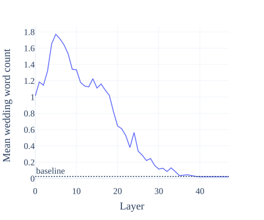
Figure 7: Topic steering effect (mean related words in completions) as a function injection layer. In blue is the average related-word count among 200 ActAdd completions. The dotted line is the rate for the unsteered GPT-2-XL.
图 7：主题转向效果（补全文本中相关词的平均数量）随注入层的变化。蓝色表示 200 条 ActAdd 补全文本中的平均相关词数。虚线表示未进行转向的 GPT-2-XL 的相应水平。
Appendix C Implementation details附录 C 实现细节
The contrast pair can be of arbitrary lengths (empirically, right-padding the shorter prompt using whitespace gives good results).
对比对中的提示词长度可以任意不同（经验表明，使用空白字符在较短提示词的右侧进行填充可以取得良好效果）。
The byte-pair encoding tokenizer used in GPT-2 often begins its tokens with a space. (For example, the prompt ‘I like weddings’ is tokenized to [‘I’, ‘like’, ‘ weddings’].) We thus prompt the model with prepended whitespace (e.g. ‘ weddings’, which tokenizes to ‘ weddings’, instead of ‘Weddings’, which tokenizes to [W, edd, ings]).
GPT-2 使用的字节对编码分词器所生成的词元通常以空格开头。（例如，提示词 ‘I like weddings’ 被分词为 [‘I’, ‘like’, ‘ weddings’]。）因此，我们使用前置空白字符的提示词来提示模型（例如，使用 ‘ weddings’，其被分词为 ‘ weddings’，而不是使用 ‘Weddings’，后者被分词为 [W, edd, ings]）。
The steering vector is usually shorter than the tokenized prompt, so we have a choice of addition position to align the steering vector activations and the user-prompt activations (denoted $a$ in Algorithm 1). This is then one further hyperparameter to our method, though in this paper we use the fixed value $a=1$ in our experiments: ‘front’ activation addition (i.e. all interventions begin at the stream of the first token). Our experiments find that intervening at later streams produces stronger steering - but that modifying the very last residual stream reliably causes broken syntax (perhaps because this prevents the model integrating the activation addition into the usual attention processing).
转向向量通常比分词后的提示词短，因此我们可以选择相加位置，以对齐转向向量的激活与用户提示词的激活（在算法 1 中记为 $a$）。这为我们的方法又引入了一个超参数，不过本文实验中使用固定值 $a=1$，即在“前端”进行激活相加（也就是说，所有干预均从第一个词元的流开始）。我们的实验发现，在更靠后的流处进行干预会产生更强的转向效果，但修改最后一个残差流总会导致句法受损（可能是因为这阻碍了模型将激活相加融入常规的注意力处理过程）。
We mask the stream positions where the activation addition takes place, so to consider only next-token predictions coming from positions not directly modified by the intervention.
我们对发生激活相加的流位置进行掩蔽，从而仅考虑来自未被干预直接修改的位置的下一词元预测。
Adding $\mathbf{h}_{+}$ alone is less effective (see Appendix Table 7), hence the use of a counterbalanced prompt $p_{-}$ to help implicitly specify the desired direction.
仅添加 $\mathbf{h}_{+}$ 的效果较差（见附录表 7），因此我们使用起平衡作用的提示词 $p_{-}$，以帮助隐式指定期望的方向。
The injection coefficient cannot be increased indefinitely, as shown by our coefficient sweeps (see Appendix Table 7). However, our experience is that e.g. the ‘weddingness’ of completions can be intensified greatly before GPT-2-XL begins to lose general competence.
我们的系数扫描结果表明，注入系数不能无限增大（见附录表 7）。不过，根据我们的经验，例如在 GPT-2-XL 开始丧失通用能力之前，补全文本的“婚礼相关程度”可以得到大幅增强。
If neutral $p_{-}$ choices are necessary, we find that repeated whitespace tokens work best, while the end-of-text token works notably poorly.
如果必须选择中性的 $p_{-}$，我们发现重复的空白词元效果最好，而文本结束词元的效果明显较差。
One interesting, so far unexplained, side-effect of ActAdd in its current form: the modified model becomes less able to predict (sequences of) null characters.
当前形式的 ActAdd 存在一个有趣且迄今尚无法解释的副作用：修改后的模型预测空字符（序列）的能力有所下降。
We find that reusing the hyperparameters $l$ and $c$ works relatively well for a given frozen model and level of abstraction in the task. (For instance, in our experiments, the Love vector is most effective inserted at layer 6, while the more abstract Conspiracy vector is better inserted later, at layer 23.)
我们发现，对于给定的冻结模型和任务抽象层次，复用超参数 $l$ 和 $c$ 的效果相对较好。（例如，在我们的实验中，Love 向量插入第 6 层时最为有效，而更抽象的 Conspiracy 向量则更适合在较后的第 23 层插入。）
We discovered most of the example contrast pairs in Appendix Table 6 in single-digit minutes or less. Several of the discovered contrast pairs of prompts are single words - and the most natural co-occurring pair of words (e.g. ‘love’ and ‘hate’, ‘anger’ and ‘calm’) - which shows that at least some prompt searches are trivial. Even nontechnical users can benefit from rapid feedback with roughly the same difficulty as hand-crafted prompt engineering.
我们用不到 10 分钟甚至更短的时间就找到了附录表 6 中的大多数示例对比对。找到的若干提示词对比对由单个词构成，而且是最自然地共同出现的词对（例如，“爱”与“恨”、“愤怒”与“平静”），这表明至少有些提示词搜索十分简单。即使是非技术用户，也能以与手工提示词工程大致相当的难度受益于快速反馈。
The prompt used for all relevance completions is: Did you know that
用于生成所有相关性评估补全文本的提示词为：你知道吗
The evaluation template: Is this text related to {topic}? Answer either ’yes’ or ’no’ Text {prompt_with_completion} Answer:
评估模板：这段文本是否与 {topic} 相关？请回答“是”或“否” 文本 {prompt_with_completion} 回答：
Table 10: Test examples from ConceptNet
表 10：来自 ConceptNet 的测试示例
| Prompt 提示词 | Target 目标 |
| A salad spinner is used to remove 沙拉甩干器用于去除 | water 水 |
| You are likely to find a bee in a flower’s 你很可能在花的以下部位找到蜜蜂： | blossom 花朵 |
| To understand the event “Paul went to a vegetarian restaurant.”, it is important to know that vegetarian restaurants do not serve 要理解“Paul 去了一家素食餐厅。”这一事件，重要的是要知道素食餐厅不供应 | meat 肉 |
For bolding SOTA, we use a one-sample $t$-test to calculate $p$-values for sentiment and toxicity metrics. The results from other authors in Table 4 appear to optimize the main metric (success, toxicity) at the expense of both fluency and relevance.
为确定以粗体标示的 SOTA 结果，我们使用单样本 $t$ 检验计算情感和毒性指标的 $p$ 值。表 4 中其他作者的结果似乎以牺牲流畅性和相关性为代价来优化主要指标（成功率、毒性）。
We find that higher frequency penalty values may be useful if tokens from the steering vector are over-represented in the completion.
我们发现，如果转向向量中的词元在补全文本中出现得过于频繁，提高频率惩罚值可能会有所帮助。
Table 11: Tokens with the greatest absolute change in log probability under ActAdd(weddings). (See Figure 8 for the distribution these are drawn from.) The probabilities most increased on average are primarily wedding-related, with the exception of ‘OG’ and ‘08’. (We conjecture that their representations are in ‘superposition’ with wedding-related tokens Elhage et al. 2022). The bottom tokens share no obvious theme and show a significantly lower absolute change in probability: the mean log-prob diff for token ‘ bride’ represents a probability increase of 500%, whereas for ‘Image’ it’s -30%.
表 11：在 ActAdd(weddings) 作用下，对数概率绝对变化最大的词元。（这些词元所来自的分布见图 8。）平均而言，概率增幅最大的词元主要与婚礼相关，‘OG’ 和 ‘08’ 除外。（我们推测，它们的表征与婚礼相关词元的表征处于“叠加”状态 Elhage et al. 2022）。表格底部的词元没有明显的共同主题，且概率的绝对变化显著较小：词元 ‘ bride’ 的平均对数概率差对应于 500% 的概率增幅，而 ‘Image’ 对应的变化为 -30%。
| token 词元 | mean_logprob_diff | mean_logprob_normal |
| marry 结婚 | 0.593 | -3.509 |
| dress 连衣裙 | 0.598 | -5.692 |
| dating 约会 | 0.601 | -6.891 |
| 08 | 0.705 | -10.749 |
| married 已婚 | 0.859 | -4.613 |
| OG | 0.868 | -11.287 |
| weddings 婚礼 | 1.009 | -6.698 |
| wedding 婚礼 | 1.027 | -4.593 |
| br | 1.139 | -6.438 |
| bride 新娘 | 1.623 | -6.652 |
| Image 图像 | -0.370 | -1.836 |
| .) | -0.352 | -2.378 |
| BP | -0.347 | -7.897 |
| U+25CF | -0.323 | -0.201 |
| Apple | -0.303 | -5.058 |
| On | -0.233 | -5.404 |
| journalists 记者 | -0.229 | -4.484 |
| defense 防御 | -0.222 | -4.864 |
| Russian 俄罗斯的 | -0.212 | -5.112 |
| It | -0.212 | -6.431 |

Figure 8: Distribution shift (in mean log-probability changes) under ActAdd, relative to the unmodified model, and compared to a normal distribution’s quantiles (red). The resulting distribution is approximately normal for most tokens. The positive tail is significantly heavier than the negative tail: one set of tokens are reliably increased in probability, one reliably decreased. See Appendix Table 11 for the corresponding tokens.
图 8：ActAdd 相对于未修改模型引起的分布偏移（以平均对数概率变化衡量），以及与正态分布分位数（红色）的比较。对于大多数词元，所得分布近似为正态分布。正尾部显著重于负尾部：一组词元的概率稳定上升，另一组词元的概率稳定下降。相应词元见附录表 11。
C.1 Details of perplexity experimentsC.1 困惑度实验的细节
For each sentence in each document, we calculate the log-probabilities $\mathcal{L}(t_{k})$ for each token $t_{k}\in s_{j}$ under the unmodified $M_{\mathrm{baseline}}$ and modified $M_{\mathrm{\text{ActAdd}}}$ models.
对于每篇文档中的每个句子，我们计算其中每个词元 $t_{k}\in s_{j}$ 在未修改的 $M_{\mathrm{baseline}}$ 模型和修改后的 $M_{\mathrm{\text{ActAdd}}}$ 模型下的对数概率 $\mathcal{L}(t_{k})$。
We compute the mean token log-probability $\accentset{\rule{3.27773pt}{0.8pt}}{\mathcal{L}}(d_{i},M)$ for each document and model. We then group documents by their wedding-word frequency $f_{w}$ (e.g. ‘those with 0.5% to 1% of their tokens wedding-related’; ‘those with 1 to 1.5% of their tokens wedding-related’), producing bins of documents $b_{m}$. We calculate the mean difference in token log-probabilities
我们计算每篇文档在每个模型下的平均词元对数概率 $\accentset{\rule{3.27773pt}{0.8pt}}{\mathcal{L}}(d_{i},M)$。然后，我们按照婚礼相关词频 $f_{w}$ 对文档进行分组（例如，“词元中有 0.5% 至 1% 与婚礼相关的文档”；“词元中有 1 至 1.5% 与婚礼相关的文档”），得到文档分箱 $b_{m}$。我们计算词元对数概率的平均差值
$\accentset{\rule{3.27773pt}{0.8pt}}{X}(b_{m})=\mathrm{mean}_{d_{i}\in b_{m}}\left(\accentset{\rule{3.27773pt}{0.8pt}}{\mathcal{L}}(d_{i},M_{\mathrm{\text{ActAdd}}})-\accentset{\rule{3.27773pt}{0.8pt}}{\mathcal{L}}(d_{i},M_{\mathrm{baseline}})\right)$ for each bin. (We use only bins with a number of documents $|b_{m}|>1000$, to reduce sampling noise.) Finally, the change in perplexity under ActAdd for each wedding-word-frequency bin is $\mathrm{PerplexityRatio}(b_{m})=-\exp(\accentset{\rule{3.27773pt}{0.8pt}}{X}(b_{m}))$.
$\accentset{\rule{3.27773pt}{0.8pt}}{X}(b_{m})=\mathrm{mean}_{d_{i}\in b_{m}}\left(\accentset{\rule{3.27773pt}{0.8pt}}{\mathcal{L}}(d_{i},M_{\mathrm{\text{ActAdd}}})-\accentset{\rule{3.27773pt}{0.8pt}}{\mathcal{L}}(d_{i},M_{\mathrm{baseline}})\right)$，对每个分箱分别进行计算。（为减少采样噪声，我们仅使用文档数量满足 $|b_{m}|>1000$ 的分箱。）最后，ActAdd 下每个婚礼相关词频分箱的困惑度变化为 $\mathrm{PerplexityRatio}(b_{m})=-\exp(\accentset{\rule{3.27773pt}{0.8pt}}{X}(b_{m}))$。
Appendix D Advantages of ActAdd over fine-tuning附录 D ActAdd 相较于微调的优势
Following Sloman 2002, we distinguish ‘ballistic’ steering (which steers the model once, e.g. at train time) from ‘online’ steering (which can steer the model repeatedly, e.g. at inference time). Fine-tuning is ballistic, while ActAdd is online in this sense - which enables iteration and otherwise infeasible chains and mixes of steering decisions.
遵循 Sloman 2002，我们区分“弹道式”转向（对模型进行一次转向，例如在训练时）与“在线”转向（可对模型反复进行转向，例如在推理时）。从这个意义上说，微调属于弹道式转向，而 ActAdd 属于在线转向，这使迭代以及其他方式下不可行的转向决策串联与混合成为可能。
Activation additions may preserve model interpretability, even while changing the model’s alignment. When finetuning a model, a single gradient update can change every parameter in it, thereby undoing your prior interpretability work, which depends on tracking individual neurons and circuits of neurons. By contrast, activation additions leave weights unchanged. If we understand what algorithms the weights implement, and something about the effects of our activation additions, we will preserve our understanding of the steered model. Finally, we hypothesize that activation addition may allow control over properties inaccessible to the fine-tuning process.
激活加法即使改变了模型的对齐方式，也可能保留模型的可解释性。对模型进行微调时，单次梯度更新就可能改变其中的每个参数，从而使此前的可解释性工作失效，因为这些工作依赖于对单个神经元及神经元回路的追踪。相比之下，激活加法保持权重不变。如果我们理解权重所实现的算法，并对激活加法的影响有所了解，就能够保留对转向后模型的理解。最后，我们假设，激活加法可能使我们能够控制微调过程无法触及的属性。
The intuition is that since the currently-active goal is contextual, it depends more on short-lived activations than the weights (which instead represent some analogue of skills and other stable patterns and mixtures of possible goals).
其直觉在于，当前激活的目标取决于上下文，因此它更多地依赖于短暂存在的激活，而非权重（权重则表征了类似技能、其他稳定模式以及可能目标的混合等内容）。
Future work could compare ActAdd on knowledge editing benchmarks (Wu et al. 2023; Zhang et al. 2024. (This comparison could be unfair to methods like ROME Meng et al. 2023), since our method is not editing weights, but it would give standardized evidence about steering.)
未来工作可以在知识编辑基准上对 ActAdd 进行比较 (Wu et al. 2023; Zhang et al. 2024。（这种比较对 ROME Meng et al. 2023) 等方法可能不公平，因为我们的方法并不编辑权重，但它能够提供关于转向的标准化证据。）
Table 12: Example of a random-vector ActAdd. We see little qualitative effect, over many runs. See Figure 10 for a systematic look at the relative size of output token distribution shift.
表 12：随机向量 ActAdd 的示例。在多次运行中，我们观察到的定性影响很小。关于输出词元分布偏移相对大小的系统考察，见图 10。
| Prompt 提示 | Baseline 基线 | Random steering 随机转向 |
| I think you’re 我觉得你 | …right. I’m just not sure how to get there. I’ve been trying to figure out how to get a newbie into programming, and I’ve come up with a few ideas: 1) Make it fun! If you can’t do something that’s fun, then you ……是对的。我只是不确定该如何做到。我一直在尝试弄清楚如何让新手入门编程，并想出了几个点子：1) 让它变得有趣！如果你做不了有趣的事，那么你 | …right. I’m just not sure how to make it work. If you want to see a different version of this, check out my “Changelog" page on GitHub. It’s a bit more detailed than the “Main Page" and has all the changes I’ve made since th ……是对的。我只是不确定该如何让它奏效。如果你想看看这个的另一个版本，可以查看我在 GitHub 上的“Changelog”页面。它比“Main Page”更详细一些，并包含了我自 th 以来所做的所有更改 |
Appendix E Replicability附录 E 可复现性
We now check that ActAdd steering generalizes to models besides GPT-2.
我们现在检验 ActAdd 转向能否推广到 GPT-2 以外的模型。
E.1 GPT-J-6BE.1 GPT-J-6B
Figures 11, 12, and 13 show the results from repeating the main experiments on GPT-J-6B Wang & Komatsuzaki 2021. We see the same dynamics from the wedding vector running example: a targeted effect on only wedding-related tokens (using both KL-div and token probability); and similar effects when injected at different layers of GPT-J and with different magnitudes $c$ applied.
图 11、12 和 13 展示了在 GPT-J-6B Wang & Komatsuzaki 2021 上重复主要实验的结果。我们在贯穿全文的婚礼向量示例中观察到了相同的动态特征：仅对婚礼相关词元产生针对性影响（同时使用 KL 散度和词元概率衡量）；在 GPT-J 的不同层注入，以及施加不同幅度 $c$ 时，也产生了类似的效果。
E.2 Llama-1-13BE.2 Llama-1-13B
Table 13 sees ActAdd displaying the same qualitative steering effect when applied to Llama-1-13B Touvron et al. 2023 (though with a notable failure to replicate on Example 6, Paris $\rightarrow$ Rome, the anger vector, and the harm vector).
表 13 显示，ActAdd 应用于 Llama-1-13B Touvron et al. 2023 时，表现出相同的定性转向效果（但值得注意的是，在示例 6、巴黎 $\rightarrow$ 罗马、愤怒向量和伤害向量上未能复现）。
E.3 OPT-6.7BE.3 OPT-6.7B
We use the OPT model Zhang et al. 2022b in our toxicity (Table 3) and sentiment (Table 4) experiments. ActAdd-OPT using the love$-$hate vector produces a statistically significant 17% drop in toxicity over an unsteered OPT, at a small (partially unavoidable owing to the nature of the detoxification task) cost to fluency and relevance. ActAdd-OPT using the love$-$hate vector produces a 21% absolute increase in positive classification over an unsteered OPT, at a larger (partially unavoidable owing to the nature of the sentiment shift task) cost to fluency and relevance.
我们在毒性（表 3）和情感（表 4）实验中使用 OPT 模型 Zhang et al. 2022b。使用 love$-$hate 向量的 ActAdd-OPT 相较于未经转向的 OPT，使毒性降低了 17%，且差异具有统计显著性，同时仅付出了流畅性和相关性略有下降的代价（由于去毒任务的性质，这种代价在一定程度上不可避免）。使用 love$-$hate 向量的 ActAdd-OPT 相较于未经转向的 OPT，使被分类为正面情感的比例绝对提高了 21%，但流畅性和相关性的下降幅度较大（由于情感转变任务的性质，这种代价在一定程度上不可避免）。
E.4 Llama-3-8BE.4 Llama-3-8B
We also use Llama-3-8B Meta 2024 in our toxicity (Table 3) and sentiment (Table 4) experiments. ActAdd-LLaMA-3 using the love$-$hate vector produces a statistically significant 5% drop in toxicity over an unsteered Llama-3-8B, at a very small (partially unavoidable owing to the nature of the detoxification task) cost to fluency and relevance. ActAdd-LLaMA-3 using the love$-$hate vector produces a 25% absolute increase in negative-to-positive classification over an unsteered Llama-3-8B, at a larger (partially unavoidable owing to the nature of the sentiment shift task) cost to fluency and relevance.
我们还在毒性（表 3）和情感（表 4）实验中使用 Llama-3-8B Meta 2024。使用 love$-$hate 向量的 ActAdd-LLaMA-3 相较于未经转向的 Llama-3-8B，使毒性降低了 5%，且差异具有统计显著性，同时仅付出了流畅性和相关性极小幅度下降的代价（由于去毒任务的性质，这种代价在一定程度上不可避免）。使用 love$-$hate 向量的 ActAdd-LLaMA-3 相较于未经转向的 Llama-3-8B，使分类结果由负面情感转为正面情感的比例绝对提高了 25%，但流畅性和相关性的下降幅度较大（由于情感转变任务的性质，这种代价在一定程度上不可避免）。
Appendix F Investigating the norm of steering vectors附录 F 转向向量范数的研究
Of what magnitude are our modifications, relative to the normal activation magnitudes present during forward passes? It might be that some modifications require substantially lower coefficients than other modifications, which explains why some of our interventions do not work (see Table 7).
相对于前向传播过程中正常激活的幅值，我们的修改幅度有多大？某些修改所需的系数可能远低于其他修改，这可以解释为什么我们的一些干预未能奏效（见表 7）。
Consider the steering vector given by
考虑由下式给出的转向向量
The prompts each have two tokens, plus an initial endoftext token automatically prepended by the tokenizer: therefore there are three residual streams in the resulting forward pass. For each residual stream $s^{(i)}$, we plot a line showing the $L_{2}$ norm of the steering vector at that sequence position (e.g. the Ang-Cal activations at position 1), divided by the norm of the residual stream at that position (i.e. the prompt embedding, here ‘I’ at position 1).
每个提示均包含两个词元，再加上分词器自动添加在开头的一个 endoftext 词元，因此，所得前向传播中存在三个残差流。对于每个残差流 $s^{(i)}$，我们绘制一条曲线，表示该序列位置处转向向量的 $L_{2}$ 范数（例如位置 1 处的 Ang-Cal 激活）与该位置处残差流范数（即提示嵌入，此处为位置 1 处的 ‘I’）之比。
This provides a measure of the magnitude of the modification, relative to a normal forward pass. Figure 9 shows the resulting relative norm over layer number.
这提供了一种相对于正常前向传播衡量修改幅度的方法。图 9 展示了所得相对范数随层编号的变化。
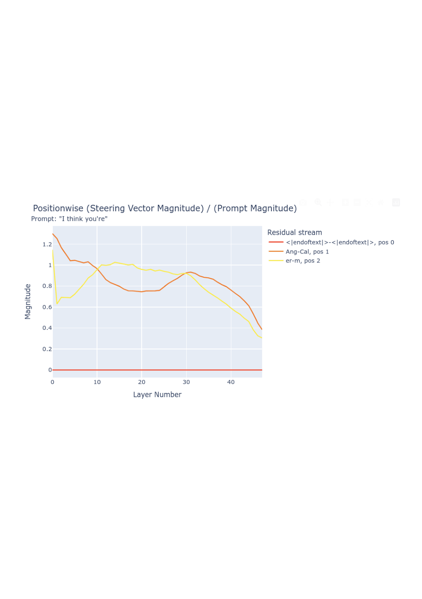
Figure 9: The relative norm decreases throughout the forward pass. The flat red line is because position 0 is the same token (endoftext) for both ‘Anger’ and ‘Calm’, and so the difference is $0$. Thus, position 0 is never modified by a steering vector generated from any pair of prompts.
图 9：相对范数在整个前向传播过程中逐渐减小。红线呈水平状，是因为对于 ‘Anger’ 和 ‘Calm’，位置 0 处均为同一个词元（endoftext），因此差值为 $0$。所以，由任意一对提示生成的转向向量都不会修改位置 0。
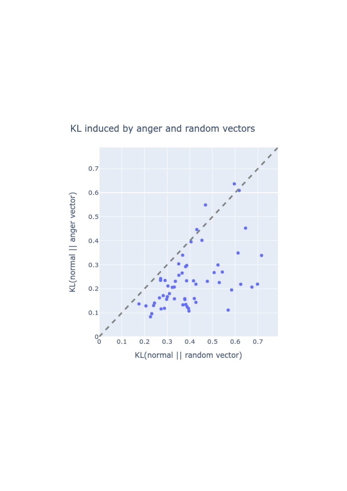
Figure 10: The KL-divergence of output tokens under an anger ActAdd and under a random vector. We see that, systematically, the anger vector changes the output distribution less than a random vector.
图 10：施加愤怒 ActAdd 和随机向量时输出词元的 KL 散度。可以看到，愤怒向量对输出分布的改变始终小于随机向量。
Importantly, Figure 9 shows the result of using $c=+1$. But Anger $-$ Calm is an effective steering vector at coefficient $+10$. Therefore, this intervention is nearly ten times the norm of the underlying forward pass. Heuristically, we interpret this as meaning that after layer normalization (and ignoring any destructive interference from adding the steering vector), around 90% of the residual stream is determined by the steering vector and not by the previous information computed from the prompt (“I think you’re"). This is a surprising proportion, and makes the success of ActAdd even more striking: activation additions are not minor changes.
需要强调的是，图 9 展示的是使用 $c=+1$ 时的结果。但 Anger $-$ Calm 在系数为 $+10$ 时是一个有效的转向向量。因此，这种干预的范数几乎是原始前向传播范数的十倍。直观而言，我们将其理解为：在层归一化之后（并忽略添加转向向量可能引起的任何相消干涉），残差流中约 90% 的部分由转向向量决定，而非由先前根据提示（“I think you’re”）计算得到的信息决定。这一比例令人惊讶，也使 ActAdd 的成功更加引人注目：激活加法并非微小的改动。
Appendix G Investigating random ActAdd vectors附录 G 随机 ActAdd 向量的研究
The above implies that GPT-2-XL’s performance is robust to internal noise (i.e. bad activations or destructive parts of steering vectors). We test this by injecting random vectors with similar magnitudes to the steering vectors.
上述结果表明，GPT-2-XL 的性能对内部噪声（即不良激活或转向向量中起破坏作用的部分）具有鲁棒性。我们通过注入与转向向量幅值相近的随机向量来检验这一点。
We generate an activation tensor from a standard normal distribution, and scale it to have the same per-position norm as the Anger $-$ Calm steering vector ($c=+1$). We then inject it into the forward pass at the appropriate location. Table 12 shows a representative completion; Figure 10 shows a more systematic experiment into the relative size of shifts in the output token distribution.
我们从标准正态分布中生成一个激活张量，并对其进行缩放，使其在各位置处的范数均与 Anger $-$ Calm 转向向量（$c=+1$）相同。随后，我们将其注入前向传播中的适当位置。表 12 展示了一个具有代表性的续写结果；图 10 展示了一项更系统的实验，用于考察输出词元分布变化幅度的相对大小。
The random vector seems not to modify the qualitative distribution of completions. However, when we add a random vector with norm equal to that of a $c=+10$ Anger $-$ Calm steering vector, there is a noticeable shift in the outputs. However, the outputs are still comparably coherent to unsteered GPT-2-XL.
随机向量似乎并未在定性层面改变续写结果的分布。然而，当我们添加一个范数与 $c=+10$ 的 Anger $-$ Calm 转向向量相同的随机向量时，输出出现了明显变化。不过，输出的连贯性仍与未经转向的 GPT-2-XL 相当。
This is evidence that GPT-2-XL is somewhat resistant to random perturbation, and is instead controllable through consistent feature directions which are added to its forward pass by steering vectors.
这一证据表明，GPT-2-XL 对随机扰动具有一定的抵抗能力，而通过转向向量将一致的特征方向添加到其前向传播中，则可以对其进行控制。
We quantitatively support this conclusion by testing how each modification changes the model’s probability distribution over next tokens. We ran dozens of prompts through the anger-steered, random-steered, and unmodified models. Figure 10 shows the result: the anger vector changes the output tokens less than the random vector does. This suggests that the anger vector has more targeted effects on next-token probabilities.
我们通过检验每种修改如何改变模型对下一个词元的概率分布，为这一结论提供定量支持。我们将数十个提示分别输入经愤怒向量转向、经随机向量转向以及未经修改的模型。图 10 展示了结果：愤怒向量对输出词元的改变小于随机向量。这表明，愤怒向量对下一个词元概率的影响更具针对性。
Note that random vectors are not the same as the steering vectors for random (i.e. character-level uniformly distributed) text. We thus also tried the ‘fdsajl; fs’ $-$ (whitespace) vector. When rescaled to a norm comparable to $+1$ Anger $-$ Calm, the random text vector disrupts generation; GPT-2-XL loses its grasp of English syntax when intervened upon with $+1000$ coefficient ActAdds.
请注意，随机向量与随机文本（即字符层面服从均匀分布的文本）的转向向量并不相同。因此，我们还尝试了 ‘fdsajl; fs’ $-$（空白字符）向量。当将其缩放至与 $+1$ 愤怒 $-$ 平静向量相近的范数时，随机文本向量会扰乱生成；使用系数为 $+1000$ 的 ActAdds 进行干预时，GPT-2-XL 会丧失对英语句法的把握。
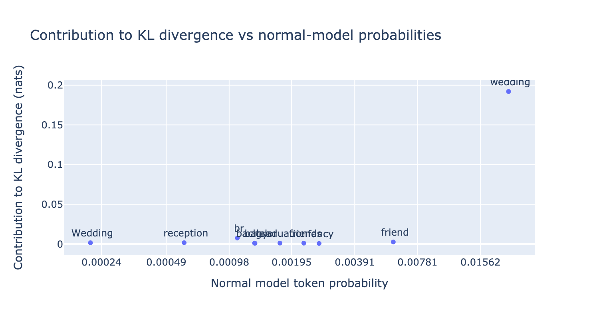
Figure 11: Token-level effect of the ActAdd wedding vector on KL-divergence, using GPT-J-6B instead of GPT-2.
图 11：使用 GPT-J-6B 替代 GPT-2 时，ActAdd 婚礼向量在词元层面对 KL 散度的影响。
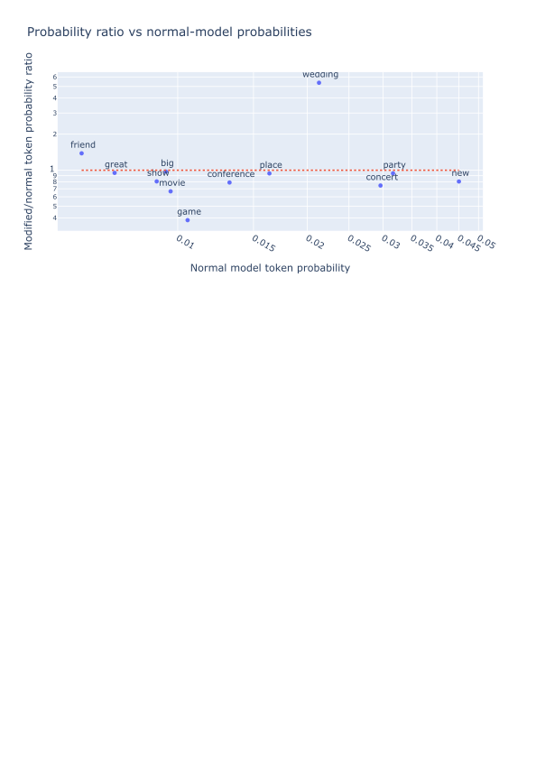
Figure 12: Token-level effect of the ActAdd wedding vector on token probability, using GPT-J-6B instead of GPT-2.
图 12：使用 GPT-J-6B 替代 GPT-2 时，ActAdd 婚礼向量在词元层面对词元概率的影响。
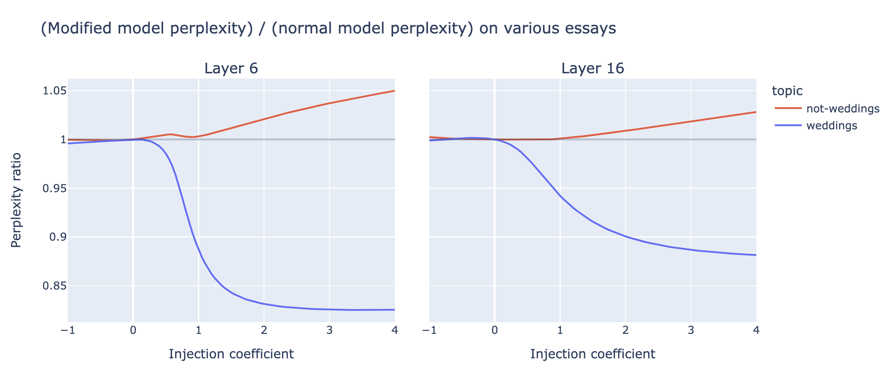
Figure 13: Perplexity ratio effect of the ActAdd wedding vector (blue) across different steering coefficient values, using GPT-J-6B instead of GPT-2. (L) when injecting the steering vector at layer 6; (R) when at layer 16.
图 13：使用 GPT-J-6B 替代 GPT-2 时，ActAdd 婚礼向量（蓝色）在不同转向系数取值下对困惑度比值的影响。（左）在第 6 层注入转向向量时；（右）在第 16 层注入转向向量时。
Appendix H Partial ActAdd附录 H 部分 ActAdd
GPT-2-XL has a 1600-dimensional residual stream. Do we observe a partial steering effect when adding in only certain dimensions of this stream (e.g., dimensions 0 through 799)? Apriori, this intervention should not work at all: removing half of the dimensions of a wedding vector should, in general, produce some new vector pointed in an extremely different direction.
GPT-2-XL 具有 1600 维的残差流。当仅在该残差流的某些维度（例如第 0 至第 799 维）上进行加法干预时，能否观察到部分转向效果？从先验上看，这种干预应当完全不起作用：通常，移除婚礼向量的一半维度，应当会产生一个指向极为不同方向的新向量。
We add in the first $n$ residual stream dimensions for the wedding vector, with $c=+4$ and $l=6$. For a range of fractions of total dimensions $f\in[0/1600,160/1600,...,1600/1600]$ and for each of six prompts $p_{i}$, we generated 100 completions. For each $f$ and $p_{i}$, we plotted the average number of wedding words per completion. (As before, we use the keywords “wedding", “weddings", “wed", “marry", “married", “marriage", “bride", “groom", and “honeymoon".)
我们仅将婚礼向量的前 $n$ 个残差流维度加到残差流中，设置 $c=+4$ 且 $l=6$。对于总维度占比的一系列取值 $f\in[0/1600,160/1600,...,1600/1600]$，我们针对六个提示中的每个提示 $p_{i}$ 分别生成了 100 个续写。对于每个 $f$ 和 $p_{i}$，我们绘制了每个续写中婚礼相关词语的平均数量。（与前文一样，我们使用关键词 “wedding”、“weddings”、“wed”、“marry”、“married”、“marriage”、“bride”、“groom” 和 “honeymoon”。）
Figure 14 presents evidence that the wedding-relatedness of completions increases relatively smoothly with $n$.
图 14 提供了证据，表明续写与婚礼的相关程度随 $n$ 的增大而相对平滑地增加。
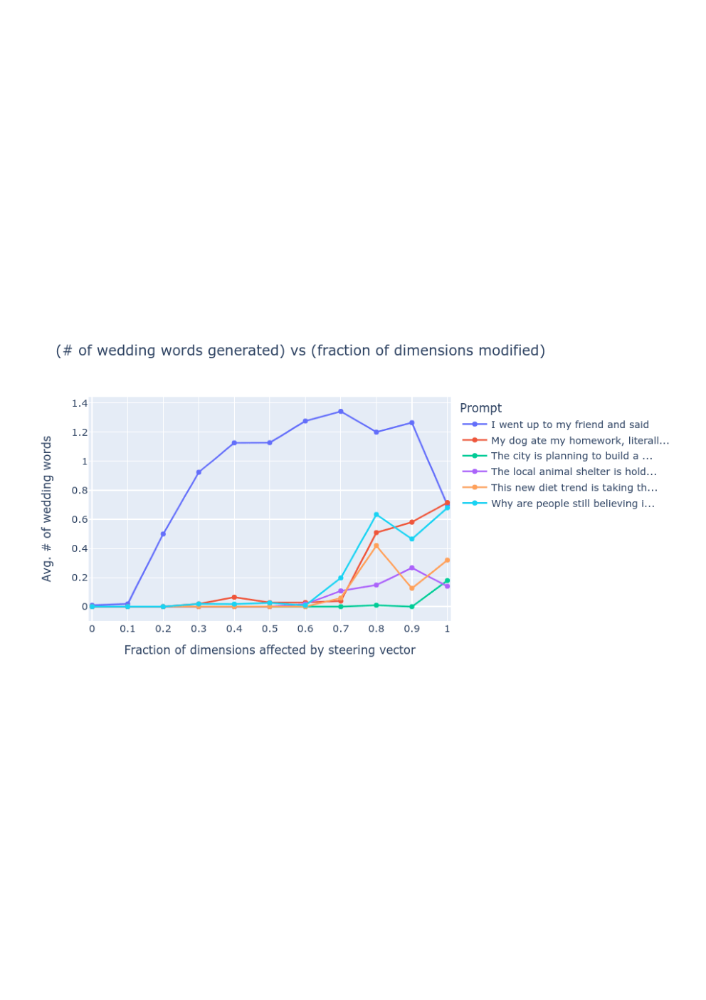
Figure 14: Wedding-relatedness (by simple related word count) as more of the residual stream dimensions are modified by the wedding ActAdd. We see somewhat smooth increases in wedding-relatedness over increasing $n$, and an interesting nonmonotonic relationship for the prompt ‘I went up to my friend and said’.
图 14：随着婚礼 ActAdd 修改的残差流维度增多，续写与婚礼的相关程度（通过简单统计相关词语的数量来衡量）的变化。我们观察到，婚礼相关程度随 $n$ 的增大而较为平滑地增加，而对于提示‘我走到朋友面前说’，则呈现出一种有趣的非单调关系。
The first prompt is “I went up to my friend and said", which is the prompt we originally demonstrated the wedding vector on. For this prompt, we observe a non-monotonic relationship between weddingness and fraction of dimensions modified. Surprisingly, for the first prompt, adding in the first 1,120 dimensions of the residual stream makes the completions more about weddings than all 1,600 dimensions. We originally chose this prompt to give GPT-2 an opportunity to bring up weddings. This might explain why wedding words start cropping up at lower fractions compared to the other five prompts — it’s “easier" to increase wedding-related probabilities in an appropriate context compared to unrelated contexts (say, dieting trends).
第一个提示是“我走到朋友面前说”，这也是我们最初用于演示婚礼向量的提示。对于该提示，我们观察到，婚礼相关程度与所修改维度的占比之间存在非单调关系。令人意外的是，对于第一个提示，仅在残差流的前 1,120 个维度上加入婚礼向量，所生成续写的婚礼相关程度反而高于在全部 1,600 个维度上加入该向量时的情况。我们最初选择这个提示，是为了让 GPT-2 有机会提及婚礼。这或许可以解释，为什么与其他五个提示相比，该提示在较低的维度占比下就开始出现婚礼相关词语——与不相关的语境（例如节食趋势）相比，在适当的语境中提高婚礼相关内容的概率更“容易”。
We hypothesize the following to explain this. Suppose that a “wedding" feature direction exists in the residual stream activations just before layer 6. Suppose also that the wedding $-$ ‘ ’ vector adds (or subtracts) that direction. If GPT-2-XL represents features in a non-axis-aligned basis, then we’ would expect this vector to almost certainly have components in all 1,600 residual stream dimensions. Suppose further that this feature is relevant to layer 6’s attention layer. To detect the presence and magnitude of this feature, the $QKV$ heads need to linearly read out the presence or absence of this feature. Therefore, (ignoring the LayerNorm) if we truncate the residual stream vector to only include the first 70% of dimensions, we would expect the $QKV$ heads to still be able to detect this wedding feature. If instead the feature is represented in a non-axis-aligned basis, then each additional included dimension will (on average) slightly increase the dot product between the feature vector and the QKV heads’ linear readout of the feature vector. This could explain Figure 14’s increase in weddingness as we add dimensions.
我们提出以下假设来解释这一现象。假设在第 6 层之前的残差流激活中存在一个“婚礼”特征方向。再假设婚礼 $-$ ‘ ’ 向量会加上（或减去）该方向。如果 GPT-2-XL 在不与坐标轴对齐的基底中表示特征，那么我们预期该向量几乎必然会在全部 1,600 个残差流维度上都有分量。进一步假设，该特征与第 6 层的注意力层相关。为了检测该特征是否存在及其强度，$QKV$ 头需要通过线性读出来判断该特征的有无。因此，（忽略 LayerNorm）如果我们截断残差流向量，仅保留前 70% 的维度，我们预期 $QKV$ 头仍然能够检测到这一婚礼特征。如果该特征反而是在不与坐标轴对齐的基底中表示的，那么每多纳入一个维度，平均而言，都会使特征向量与 QKV 头用于线性读出该特征的向量之间的点积略有增加。这可以解释图 14 中婚礼相关程度随所加入维度的增多而上升的现象。
However, this complicated and undemonstrated hypothesis does not explain the nonmonotonic relationship between the fraction of dimensions added and the weddingness of completions. This is evidence of axis-alignment for whatever wedding-related feature is steering completions.
然而，这一复杂且未经证实的假设无法解释所加入维度的占比与续写的婚礼相关程度之间的非单调关系。这为引导续写的婚礼相关特征具有坐标轴对齐性提供了证据。
Table 13: Example outputs before and after applying ActAdd on Llama-13B. Notice the failed replication on the Eiffel example.
表 13：在 Llama-13B 上应用 ActAdd 前后的输出示例。请注意，在 Eiffel 示例上未能成功复现。
| prompt 1 提示 1 | prompt 2 提示 2 | layer 层 | coeff 系数 | User prompt 用户提示 | Before steering 转向前 | After steering 转向后 |
| $p_{+}$ | $p_{-}$ | $l$ | $c$ | $p_{*}$ | (ActAdd) | |
| ‘Intent to praise’ ‘赞美的意图’ | ‘Intent to hurt’ ‘伤害的意图’ | 6 | $+15$ | ‘I want to kill you because you’re such a’ ‘我想杀了你，因为你是个如此’ | I know that sounds crazy, but it’s true and I can prove it. Let me tell you how: You are the most selfish person in my life right now. It seems like every time we talk or hang 我知道这听起来很疯狂，但这是真的，而且我可以证明。让我告诉你为什么：你是我现在生活中最自私的人。似乎每次我们交谈或待在一起 | beautiful woman, and you’ve got the most amazing eyes. You know what? You are so lucky that your parents gave birth to you! 美丽的女人，而且你有一双无比迷人的眼睛。你知道吗？你的父母生下了你，你真是太幸运了！ |
| ‘Love’ ‘爱’ | ‘Hate’ ‘恨’ | 6 | $+5$ | ‘I hate you because’ ‘我恨你，因为’ | you are a liar. I love you because your lies make me feel alive. —NICK CAVE, "THE SHIP SANTA MARIA" (1986). **A** s the su 你是个骗子。我爱你，因为你的谎言让我感到自己还活着。——NICK CAVE，"THE SHIP SANTA MARIA" (1986)。**A** s the su | you are the best person in my life. Love is a gift of God, it’s not easy to find someone who loves us truly and unconditionally like our parents do but we can always find that love from other people arou 你是我生命中最好的人。爱是上帝的馈赠，要找到一个像父母那样真心且无条件地爱我们的人并不容易，但我们总能从周围的其他人那里找到那份爱 |
| ‘Anger’ ‘愤怒’ | ‘Calm’ ‘平静’ | 20 | $+10$ | I think you’re 我觉得你是 | I think you’re a good man, Charlie Brown. Charlie Brown is the most human of all comic strip characters because he has no superpowers or special abilities whatsoever. He doesn’t have any magical powers like Lucy does when sh 我觉得你是个好人，Charlie Brown。Charlie Brown 是所有连环漫画角色中最具人性的一个，因为他没有任何超能力或特殊本领。他也没有像 Lucy 那样的魔法，当她 | a very lucky person.\n Angela: Oh, no! It was my fault! \n I can’t believe it happened again. 一个非常幸运的人。\n Angela：哦，不！是我的错！\n 我不敢相信这种事又发生了。 |
| ‘The Eiffel Tower is in Rome’ ‘埃菲尔铁塔位于罗马’ | ‘The Eiffel Tower is in France’ ‘埃菲尔铁塔位于法国’ | 24 | $+10$ | To see the eiffel tower, people flock to 为了看埃菲尔铁塔，人们纷纷涌向 | paris. To get a glimpse of her face, i’d travel far and wide. I can tell you all about it, but i won’t be able to show you. 巴黎。为了看一眼她的面容，我愿意走遍天涯海角。我可以把这一切都告诉你，却无法展示给你看。 | paris from all over the world. I’m not sure what you mean by "flock" here; I think it should be "go". Also, if you are talking about a large number of people going somewhere, then you ca 巴黎，他们来自世界各地。我不确定你在这里用“flock”是什么意思；我觉得应该用“go”。另外，如果你说的是很多人去某个地方，那么你可 |
| ‘I NEVER talk about people getting hurt’ ‘我从不谈论人们受伤的事’ | ‘I talk about people getting hurt’ ‘我谈论人们受伤的事’ | 15 | $+4$ | The rock hurtled toward the child. The child couldn’t get out of the way in time, and so sadly the rock 石头朝那个孩子飞去。孩子来不及躲开，于是不幸的是，石头 | hit him right on his head. The little boy cried for a long while before he could stop crying. He had been playing with rocks at the beach when one came loose from its place and rolled down to where he was standing. 正好砸中了他的头。小男孩哭了很久才止住哭声。当时他正在海滩上玩石头，其中一块石头从原处松脱，滚到了他站立的地方。 | hit him right on his head. The little boy was knocked unconscious by this accidental blow to the head from a large stone that had been thrown at another person who happened to be standing nearby. 正好砸中了他的头。有人朝碰巧站在附近的另一个人扔了一块大石头，意外击中了小男孩的头部，将他砸晕了。 |